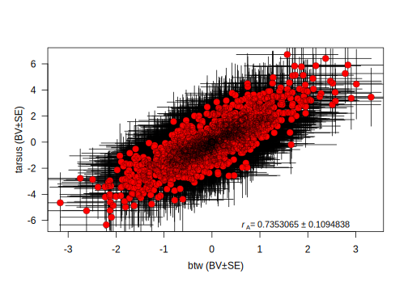
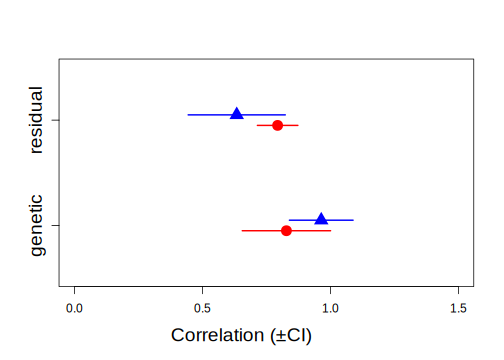
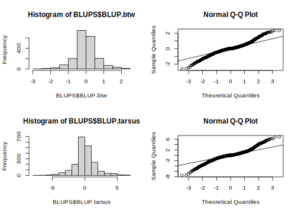
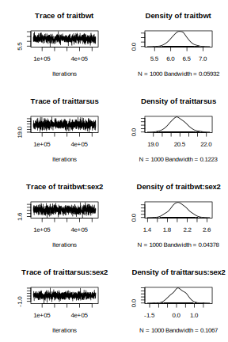
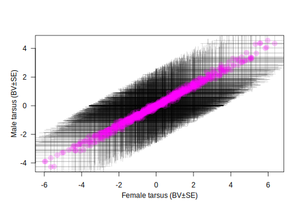

3.2 Asreml-R
3.2.1 Running the model
First we need to load the asreml library:
library(asreml)For running multivariate analyses in ASReml-R, the code is slightly more complex than for the univariate case. This is because ASReml-R allows us to make different assumptions about the way in which traits might be related. We need to explicitly specify a covariance structure with difference covariance functions us(), idh() or corgh() which for example would estimate an unconstrained (co)variance matrix, an identity matrix and a variance and correlation matrix repestively. We can also specify some starting values for the variance matrices. These can be very approximate guestimates or not at all, but having reasonable starting values can help convergence. It is also possible to let the model running without specifying starting values. Finally, we have increased the default maximum number of iterations (maxiter) which can help to achieve convergence for more complicated models. Another way to increase the number of iteration will be to use the update function. Notes that if the LogLik is not stabilized after several iterations, it is good indication of the model require more iteration.
ainv <- ainverse(gryphonped)
modela <- asreml(
fixed = cbind(bwt, tarsus) ~ trait,
random = ~ us(trait, init = c(1, 0.1, 1)):vm(animal, ainv),
residual = ~ id(units):us(trait, init = c(1, 0.1, 1)),
data = gryphon,
na.action = na.method(x = "include", y = "include"),
maxit = 20
)## Model fitted using the sigma parameterization.
## ASReml 4.1.0 Sat Apr 30 11:00:45 2022
## LogLik Sigma2 DF wall cpu
## 1 -7108.741 1.0 1535 11:00:45 0.0
## 2 -5837.803 1.0 1535 11:00:45 0.0
## 3 -4437.495 1.0 1535 11:00:45 0.0
## 4 -3459.378 1.0 1535 11:00:45 0.0
## 5 -2914.034 1.0 1535 11:00:45 0.0
## 6 -2729.131 1.0 1535 11:00:45 0.0
## 7 -2684.659 1.0 1535 11:00:45 0.0
## 8 -2679.838 1.0 1535 11:00:45 0.0
## 9 -2679.742 1.0 1535 11:00:45 0.0
## 10 -2679.741 1.0 1535 11:00:45 0.0modela <- update(modela)## Model fitted using the sigma parameterization.
## ASReml 4.1.0 Sat Apr 30 11:00:45 2022
## LogLik Sigma2 DF wall cpu
## 1 -2679.741 1.0 1535 11:00:45 0.0
## 2 -2679.741 1.0 1535 11:00:45 0.0modela has fitted a bivariate model of bwt and tarsus, with the mean for each of the traits as a fixed effect (trait). The additive genetic variance-covariance matrix (\(\textbf{G}\)) is unstructured (us; i.e. all elements are free to vary) and the starting values for \(V_A\) for bwt, \(COV_A\) between bwt and tarsus, and \(V_A\) for tarsus are set to 1, 0.1 and 1, respectively. Similarly, the residual matrix is unstructured and uses the same starting values.
Note that the argument na.action = na.method(x = "include", y = "include") can be added to the model. In a bivariate model, it will help calculate the covariance between two traits with different missing information NA and so help imbalance phenotypage and save sample size. However, it is important to scale ( mean =0, var =1) the two traits to correctly adjust the model(see Asreml-R manual for more information).
Let’s have a look at the variance components, and notice that there are now seven (co)variance components reported in the table:
summary(modela)$varcomp## component std.error z.ratio bound
## trait:vm(animal, ainv)!trait_bwt:bwt 3.368397 0.6348307 5.305977 P
## trait:vm(animal, ainv)!trait_tarsus:bwt 2.459809 1.0732644 2.291895 P
## trait:vm(animal, ainv)!trait_tarsus:tarsus 12.345792 3.0744285 4.015638 P
## units:trait!R 1.000000 NA NA F
## units:trait!trait_bwt:bwt 3.849916 0.5200101 7.403541 P
## units:trait!trait_tarsus:bwt 3.313282 0.9129234 3.629310 P
## units:trait!trait_tarsus:tarsus 17.646432 2.6670380 6.616491 P
## %ch
## trait:vm(animal, ainv)!trait_bwt:bwt 0
## trait:vm(animal, ainv)!trait_tarsus:bwt 0
## trait:vm(animal, ainv)!trait_tarsus:tarsus 0
## units:trait!R 0
## units:trait!trait_bwt:bwt 0
## units:trait!trait_tarsus:bwt 0
## units:trait!trait_tarsus:tarsus 0The first three terms are related to the genetic matrix and, in order are \(V_{A,bwt}\), \(COV_A\), \(V_{A, tarsus}\). Below is again a line where the units:traitr!R component equals to 1, which again can be ignored. The final three terms relate to the residual matrix and correspond to \(V_{R,bwt}\), \(COV_R\), \(V_{R,tarsus}\). Based on our quick and dirty check (is z.ratio > 1.96?) all components look to be statistically significant.
We can calculate the genetic correlation as \(COV_A / \sqrt{V_{A,bwt} \cdot V_{A,tarsus}}\). Thus this model gives an estimate of \(r_A\) = 0.38. It is also possible to estimate the residual correlation \(r_{res}\) = 0.4.
Both correlations are distinct in nature. The genetic correlation reflects how much the traits are linked by genetic via polygenic effect or linkage desequilibrium, whereas the residual correlation reflects the environmental correlation or errors measurement correlation.
Although we can calculate this by hand, we can also use vpredict(), which also provides an (approximate) standard error:
vpredict(modela, r_A ~ V2 / sqrt(V1 * V3))## Estimate SE
## r_A 0.3814436 0.1299759vpredict(modela, r_res ~ V6 / sqrt(V5 * V7))## Estimate SE
## r_res 0.4019799 0.08607104Of course we can also calculate the heritability of bwt and tarsus from this model:
vpredict(modela, h2.bwt ~ V1 / (V1 + V5))## Estimate SE
## h2.bwt 0.466646 0.07671533vpredict(modela, h2.tarsus ~ V3 / (V3 + V7))## Estimate SE
## h2.tarsus 0.4116331 0.093058633.2.2 Adding fixed and random effects
Fixed and random effects can be added just as for the univariate case. Given that our full model of bwt from tutorial 1 had sex as a fixed effect as well as birth year and mother as random effects, we could specify a bivariate formulation with the same complexity:
modelb <- asreml(
fixed = cbind(bwt, tarsus) ~ trait + at(trait):sex,
random = ~ us(trait, init = c(1, 0.1, 1)):vm(animal, ainv) +
us(trait, init = c(1, 0.1, 1)):byear +
us(trait, init = c(1, 0.1, 1)):mother,
residual = ~ id(units):us(trait, init = c(1, 0.1, 1)),
data = gryphon,
na.action = na.method(x = "include", y = "include"),
maxit = 20
)## Model fitted using the sigma parameterization.
## ASReml 4.1.0 Sat Apr 30 11:00:45 2022
## LogLik Sigma2 DF wall cpu
## 1 -4672.301 1.0 1533 11:00:46 0.0
## 2 -4005.615 1.0 1533 11:00:46 0.0
## 3 -3271.483 1.0 1533 11:00:46 0.0 (1 restrained)
## 4 -2761.414 1.0 1533 11:00:46 0.0 (1 restrained)
## 5 -2481.357 1.0 1533 11:00:46 0.0
## 6 -2395.858 1.0 1533 11:00:46 0.0
## 7 -2381.050 1.0 1533 11:00:46 0.0
## 8 -2380.251 1.0 1533 11:00:46 0.0
## 9 -2380.246 1.0 1533 11:00:46 0.0modelb <- update(modelb)## Model fitted using the sigma parameterization.
## ASReml 4.1.0 Sat Apr 30 11:00:46 2022
## LogLik Sigma2 DF wall cpu
## 1 -2380.246 1.0 1533 11:00:46 0.0
## 2 -2380.246 1.0 1533 11:00:46 0.0Note that we have specified a covariance structure for each random effect and an estimate of the effect of sex on both birth weight and tarsus length.
There will now be thirteen (co)variance components reported after running the code:
summary(modelb)$varcomp## component std.error z.ratio
## trait:byear!trait_bwt:bwt 0.9746385 0.2825727 3.4491602
## trait:byear!trait_tarsus:bwt 0.1624076 0.4185079 0.3880635
## trait:byear!trait_tarsus:tarsus 3.7383721 1.2065992 3.0982716
## trait:mother!trait_bwt:bwt 1.1445184 0.2302182 4.9714512
## trait:mother!trait_tarsus:bwt -1.5567306 0.4051848 -3.8420260
## trait:mother!trait_tarsus:tarsus 4.8206132 1.3201300 3.6516202
## trait:vm(animal, ainv)!trait_bwt:bwt 1.9893546 0.4410246 4.5107569
## trait:vm(animal, ainv)!trait_tarsus:bwt 3.3170404 0.9032323 3.6724110
## trait:vm(animal, ainv)!trait_tarsus:tarsus 10.2294887 2.8077066 3.6433610
## units:trait!R 1.0000000 NA NA
## units:trait!trait_bwt:bwt 1.8443110 0.3443178 5.3564203
## units:trait!trait_tarsus:bwt 4.0142841 0.7412540 5.4155308
## units:trait!trait_tarsus:tarsus 12.4845955 2.2893363 5.4533690
## bound %ch
## trait:byear!trait_bwt:bwt P 0
## trait:byear!trait_tarsus:bwt P 0
## trait:byear!trait_tarsus:tarsus P 0
## trait:mother!trait_bwt:bwt P 0
## trait:mother!trait_tarsus:bwt P 0
## trait:mother!trait_tarsus:tarsus P 0
## trait:vm(animal, ainv)!trait_bwt:bwt P 0
## trait:vm(animal, ainv)!trait_tarsus:bwt P 0
## trait:vm(animal, ainv)!trait_tarsus:tarsus P 0
## units:trait!R F 0
## units:trait!trait_bwt:bwt P 0
## units:trait!trait_tarsus:bwt P 0
## units:trait!trait_tarsus:tarsus P 0we can estimate the different correlations using vpredict:
vpredict(modelb, r_byear ~ V2 / sqrt(V1 * V3))## Estimate SE
## r_byear 0.08508312 0.2134209vpredict(modelb, r_M ~ V5 / sqrt(V4 * V6))## Estimate SE
## r_M -0.6627518 0.2487963vpredict(modelb, r_A ~ V8 / sqrt(V7 * V9))## Estimate SE
## r_A 0.7353053 0.1094747vpredict(modelb, r_res ~ V12 / sqrt(V11 * V13))## Estimate SE
## r_res 0.8365729 0.07366762Now we can look at the fixed effects parameters and assess their significance with a conditional Wald F-test:
summary(modelb, coef = TRUE)$coef.fi
wald.asreml(modelb, denDF = "default", ssType = "conditional")$Wald## solution std error z.ratio
## at(trait, tarsus):sex_1 0.0000000 NA NA
## at(trait, tarsus):sex_2 -0.0684413 0.3823448 -0.1790041
## at(trait, bwt):sex_1 0.0000000 NA NA
## at(trait, bwt):sex_2 1.9502053 0.1480467 13.1729086
## trait_bwt 6.3844483 0.2328210 27.4221324
## trait_tarsus 20.5936436 0.5098944 40.3880569## Model fitted using the sigma parameterization.
## ASReml 4.1.0 Sat Apr 30 11:00:46 2022
## LogLik Sigma2 DF wall cpu
## 1 -2380.246 1.0 1533 11:00:46 0.0
## 2 -2380.246 1.0 1533 11:00:46 0.0
## Calculating denominator DF##
## Df denDF F.inc F.con Margin Pr
## trait 2 52.6 1396.00 1396.00 0.00000
## at(trait, bwt):sex 1 812.8 298.40 173.50 B 0.00000
## at(trait, tarsus):sex 1 747.9 0.03 0.03 B 0.85798Note that it is possible to specify a fixed effect to a specific trait by adding the number of order within cbind inside the argument at(trait,x). For example, here we apply the fixed effect sex only to the response variable tarsus.
modelb_2 <- asreml(
fixed = cbind(bwt, tarsus) ~ trait + at(trait, 2):sex,
random = ~ us(trait, init = c(1, 0.1, 1)):vm(animal, ainv) +
us(trait, init = c(1, 0.1, 1)):byear +
us(trait, init = c(1, 0.1, 1)):mother,
residual = ~ id(units):us(trait, init = c(1, 0.1, 1)),
data = gryphon,
na.action = na.method(x = "include", y = "include"),
maxit = 20
)## Model fitted using the sigma parameterization.
## ASReml 4.1.0 Sat Apr 30 11:00:47 2022
## LogLik Sigma2 DF wall cpu
## 1 -4810.563 1.0 1534 11:00:47 0.0
## 2 -4129.799 1.0 1534 11:00:47 0.0
## 3 -3382.529 1.0 1534 11:00:47 0.0 (1 restrained)
## 4 -2864.076 1.0 1534 11:00:47 0.0
## 5 -2574.891 1.0 1534 11:00:47 0.0
## 6 -2478.879 1.0 1534 11:00:47 0.0
## 7 -2458.305 1.0 1534 11:00:47 0.0
## 8 -2456.425 1.0 1534 11:00:47 0.0
## 9 -2456.377 1.0 1534 11:00:47 0.0
## 10 -2456.376 1.0 1534 11:00:47 0.0summary(modelb_2, coef = TRUE)$coef.fi
wald.asreml(modelb_2, denDF = "default", ssType = "conditional")$Wald## solution std error z.ratio
## at(trait, tarsus):sex_1 0.000000 NA NA
## at(trait, tarsus):sex_2 -3.267042 0.2953279 -11.06242
## trait_bwt 7.636226 0.2389515 31.95722
## trait_tarsus 22.703658 0.4827348 47.03133## Model fitted using the sigma parameterization.
## ASReml 4.1.0 Sat Apr 30 11:00:47 2022
## LogLik Sigma2 DF wall cpu
## 1 -2456.376 1.0 1534 11:00:47 0.0
## 2 -2456.376 1.0 1534 11:00:47 0.0
## Calculating denominator DF##
## Df denDF F.inc F.con Margin Pr
## trait 2 50.7 1233.0 1233.0 0.00000e+00
## at(trait, tarsus):sex 1 522.9 122.4 122.4 B 1.02886e-253.2.3 Significance testing
Under the model above \(r_M\) is estimated as -0.66 and the z.ratio associated with the corresponding covariance (\(COV_M\)) is >2 (in absolute terms). We might therefore infer that there is evidence for a strong negative correlation between the traits with respect to the mother and that while maternal identity explains variance in both traits those mothers that tend to produce heavier offspring actually tend to produce offspring with shorter tarsus lengths.
To formally test if \(COV_M\) is significantly different from zero, we can compare the log-likelihood for this model:
modelb$loglik## [1] -2380.246to a model in which we specify that \(COV_M\)=0. Since this constraint reduces the number of parameters to be estimated by one, we can use a likelihood ratio test (LRT) with one degree of freedom. To run the constrained model, we modify the G structure defined for the mother random effect to diagonal (diag), which means we only estimate the variances (the diagonal of the matrix) but not the covariance (the covariance are fixed to 0):
modelc <- asreml(
fixed = cbind(bwt, tarsus) ~ trait + at(trait):sex,
random = ~ us(trait, init = c(1, 0.1, 1)):vm(animal, ainv) +
us(trait, init = c(1, 0.1, 1)):byear +
diag(trait, init = c(1, 1)):mother,
residual = ~ id(units):us(trait, init = c(1, 0.1, 1)),
data = gryphon,
na.action = na.method(x = "include", y = "include"),
maxit = 20
)## Model fitted using the sigma parameterization.
## ASReml 4.1.0 Sat Apr 30 11:00:48 2022
## LogLik Sigma2 DF wall cpu
## 1 -4677.820 1.0 1533 11:00:48 0.0
## 2 -4010.442 1.0 1533 11:00:48 0.0
## 3 -3275.409 1.0 1533 11:00:48 0.0
## 4 -2763.519 1.0 1533 11:00:48 0.0
## 5 -2483.732 1.0 1533 11:00:48 0.0
## 6 -2400.242 1.0 1533 11:00:48 0.0
## 7 -2386.663 1.0 1533 11:00:48 0.0
## 8 -2386.049 1.0 1533 11:00:48 0.0
## 9 -2386.045 1.0 1533 11:00:48 0.0You can run summary(modelc)$varcomp to confirm this worked. We can now obtain the log-likelihood of this model and compare this to that of modelb using a likelihood ratio test:
modelc$loglik## [1] -2386.045We can see that the model log-likelihood is now -2386.05. And comparing the models using a likelihood ratio test:
2 * (modelb$loglik - modelc$loglik)## [1] 11.59835So our chi-square test statistic is \(\chi^2_1\)= 11.6. The p-value that goes with this is obtained by:
1 - pchisq(2 * (modelb$loglik - modelc$loglik), 1)## [1] 0.0006601037We would therefore conclude that the maternal covariance is significantly different from zero.
We could apply the same procedure to show that the residual (environmental) covariance and the genetic covariance estimates are significantly greater than zero (i.e., heavier individuals tend to have longer tarsus lengths). In contrast, we should find that the byear covariance between the two traits is non-significant.
modeld <- asreml(
fixed = cbind(bwt, tarsus) ~ trait + at(trait):sex,
random = ~ us(trait, init = c(1, 0.1, 1)):vm(animal, ainv) +
diag(trait, init = c(1, 1)):byear +
us(trait, init = c(1, 0.1, 1)):mother,
residual = ~ id(units):us(trait, init = c(1, 0.1, 1)),
data = gryphon,
na.action = na.method(x = "include", y = "include"),
maxit = 20
)## Model fitted using the sigma parameterization.
## ASReml 4.1.0 Sat Apr 30 11:00:48 2022
## LogLik Sigma2 DF wall cpu
## 1 -4672.708 1.0 1533 11:00:48 0.0
## 2 -4005.953 1.0 1533 11:00:48 0.0
## 3 -3271.737 1.0 1533 11:00:48 0.0 (1 restrained)
## 4 -2761.626 1.0 1533 11:00:48 0.0 (1 restrained)
## 5 -2481.649 1.0 1533 11:00:48 0.0
## 6 -2395.992 1.0 1533 11:00:48 0.0
## 7 -2381.136 1.0 1533 11:00:48 0.0
## 8 -2380.331 1.0 1533 11:00:48 0.0
## 9 -2380.326 1.0 1533 11:00:48 0.02 * (modelb$loglik - modeld$loglik)## [1] 0.16006411 - pchisq(2 * (modelb$loglik - modeld$loglik), 1)## [1] 0.68909753.2.4 Estimate directly the genetic correlation within the model
Within Asreml-r, different matrix structure can be specify such as us,corg, diag, etc (cf see the Asreml-r guide). Instead of the fitting an unstructured matrix with the argument us or a reduced model with no covariance with the argument diag, we can also directly estimate the genetic correlation between the bwt and tarsus with corgh.
Here we decide to estimate directly the additive genetic correlation.
modele <- asreml(
fixed = cbind(bwt, tarsus) ~ trait + at(trait):sex,
random = ~ corgh(trait, init = c(0.1, 1, 1)):vm(animal, ainv) +
us(trait, init = c(1, 0.1, 1)):byear +
us(trait, init = c(1, 0.1, 1)):mother,
residual = ~ id(units):us(trait, init = c(1, 0.1, 1)),
data = gryphon,
na.action = na.method(x = "include", y = "include"),
maxit = 20
)## Model fitted using the sigma parameterization.
## ASReml 4.1.0 Sat Apr 30 11:00:48 2022
## LogLik Sigma2 DF wall cpu
## 1 -4672.301 1.0 1533 11:00:48 0.0
## 2 -4003.183 1.0 1533 11:00:48 0.0
## 3 -3266.521 1.0 1533 11:00:48 0.0 (1 restrained)
## 4 -2757.188 1.0 1533 11:00:49 0.0 (1 restrained)
## 5 -2479.293 1.0 1533 11:00:49 0.0
## 6 -2395.477 1.0 1533 11:00:49 0.0
## 7 -2381.026 1.0 1533 11:00:49 0.0
## 8 -2380.251 1.0 1533 11:00:49 0.0
## 9 -2380.246 1.0 1533 11:00:49 0.0modele <- update(modele)## Model fitted using the sigma parameterization.
## ASReml 4.1.0 Sat Apr 30 11:00:49 2022
## LogLik Sigma2 DF wall cpu
## 1 -2380.246 1.0 1533 11:00:49 0.0
## 2 -2380.246 1.0 1533 11:00:49 0.0summary(modele)$varcomp## component std.error
## trait:byear!trait_bwt:bwt 0.9746386 0.2825728
## trait:byear!trait_tarsus:bwt 0.1624071 0.4185082
## trait:byear!trait_tarsus:tarsus 3.7383734 1.2066018
## trait:mother!trait_bwt:bwt 1.1445186 0.2302183
## trait:mother!trait_tarsus:bwt -1.5567316 0.4051850
## trait:mother!trait_tarsus:tarsus 4.8206154 1.3201324
## trait:vm(animal, ainv)!trait!tarsus:!trait!bwt.cor 0.7353061 0.1094807
## trait:vm(animal, ainv)!trait_bwt 1.9893543 0.4410243
## trait:vm(animal, ainv)!trait_tarsus 10.2294850 2.8077055
## units:trait!R 1.0000000 NA
## units:trait!trait_bwt:bwt 1.8443112 0.3443178
## units:trait!trait_tarsus:bwt 4.0142825 0.7412540
## units:trait!trait_tarsus:tarsus 12.4845977 2.2893355
## z.ratio bound %ch
## trait:byear!trait_bwt:bwt 3.449159 P 0
## trait:byear!trait_tarsus:bwt 0.388062 P 0
## trait:byear!trait_tarsus:tarsus 3.098266 P 0
## trait:mother!trait_bwt:bwt 4.971450 P 0
## trait:mother!trait_tarsus:bwt -3.842027 P 0
## trait:mother!trait_tarsus:tarsus 3.651615 P 0
## trait:vm(animal, ainv)!trait!tarsus:!trait!bwt.cor 6.716310 U 0
## trait:vm(animal, ainv)!trait_bwt 4.510758 P 0
## trait:vm(animal, ainv)!trait_tarsus 3.643361 P 0
## units:trait!R NA F 0
## units:trait!trait_bwt:bwt 5.356422 P 0
## units:trait!trait_tarsus:bwt 5.415529 P 0
## units:trait!trait_tarsus:tarsus 5.453372 P 0It is important to note that using corgh change the order of the estimate (co)variance/correlation. Thus, the initial values need to be reorder and all different calculation need to be adjust in consequence.
It is also important to check the difference between the model with us and corgh to make sure any mistake are made.
summary(modelb)$loglik## [1] -2380.246summary(modele)$loglik## [1] -2380.246There two main advantages to use corgh: first, a direct estimation of correlation within the G matrix can avoid mistake in the vpredict calculation; second, it is possible to test if the correlation is significantly different than 0 (similar result as LRT with the covariance) but also to -1 and 1 which correspond of the correlation boundaries.
The following code showed how to create a reduced model with the correlation close to 1 and compared to the initial model.
Since we compared the correlation to its boundary, the degree of freedom is only half as a one tail LTR.
MODEL_MODIF <- update.asreml(modele, start.values = T)
G_MOD <- MODEL_MODIF$vparameters.table[(1:9), ]
G_MOD[1, 2] <- 0.99999
G_MOD[1, 3] <- "F"
modele.red <- asreml(
fixed = cbind(bwt, tarsus) ~ trait + at(trait):sex,
random = ~ corgh(trait, init = c(0.1, 1, 1)):vm(animal, ainv) +
us(trait, init = c(1, 0.1, 1)):byear +
us(trait, init = c(1, 0.1, 1)):mother,
residual = ~ id(units):us(trait, init = c(1, 0.1, 1)),
data = gryphon,
na.action = na.method(x = "include", y = "include"),
maxit = 20,
G.param = G_MOD
)## Model fitted using the sigma parameterization.
## ASReml 4.1.0 Sat Apr 30 11:00:49 2022
## LogLik Sigma2 DF wall cpu
## 1 -2545.233 1.0 1533 11:00:49 0.0
## 2 -2483.883 1.0 1533 11:00:49 0.0
## 3 -2423.504 1.0 1533 11:00:49 0.0
## 4 -2392.509 1.0 1533 11:00:49 0.0
## 5 -2383.661 1.0 1533 11:00:49 0.0
## 6 -2383.084 1.0 1533 11:00:49 0.0
## 7 -2383.033 1.0 1533 11:00:49 0.0
## 8 -2383.022 1.0 1533 11:00:49 0.0
## 9 -2383.019 1.0 1533 11:00:49 0.0
## 10 -2383.019 1.0 1533 11:00:49 0.02 * (modele$loglik - modele.red$loglik)## [1] 5.5446791 - pchisq(2 * (modele$loglik - modele.red$loglik), df = 0.5)## [1] 0.006598676Here, the correlation is significantly different than 1 (~0.99999).
3.2.5 Visualisation of the correlation (aka BLUP extraction)
When estimating correlation between traits, having a visualization of it can help the interpretation. In addition, visualizing the correlation can spot outliers in the dataset. Thanks to mixed model, each breeding values is stored within the model and can be extract as BLUP (Best Linear Unbiased Predictor).BLUP should be normaly distributed, if not you need to check the assumption of your animal model.
To simplify the following code, we rename the variable T1 and T2.
gryphon$T1 <- gryphon$bwt
gryphon$T2 <- gryphon$tarsus
############
modele <- asreml(
fixed = cbind(T1, T2) ~ trait + at(trait):sex,
random = ~ corgh(trait, init = c(0.1, 1, 1)):vm(animal, ainv) +
us(trait, init = c(1, 0.1, 1)):byear +
us(trait, init = c(1, 0.1, 1)):mother,
residual = ~ id(units):us(trait, init = c(1, 0.1, 1)),
data = gryphon,
na.action = na.method(x = "include", y = "include"),
maxit = 20
)## Model fitted using the sigma parameterization.
## ASReml 4.1.0 Sat Apr 30 11:00:49 2022
## LogLik Sigma2 DF wall cpu
## 1 -4672.301 1.0 1533 11:00:49 0.0
## 2 -4003.183 1.0 1533 11:00:50 0.0
## 3 -3266.521 1.0 1533 11:00:50 0.0 (1 restrained)
## 4 -2757.188 1.0 1533 11:00:50 0.0 (1 restrained)
## 5 -2479.293 1.0 1533 11:00:50 0.0
## 6 -2395.477 1.0 1533 11:00:50 0.0
## 7 -2381.026 1.0 1533 11:00:50 0.0
## 8 -2380.251 1.0 1533 11:00:50 0.0
## 9 -2380.246 1.0 1533 11:00:50 0.0modele <- update(modele)## Model fitted using the sigma parameterization.
## ASReml 4.1.0 Sat Apr 30 11:00:50 2022
## LogLik Sigma2 DF wall cpu
## 1 -2380.246 1.0 1533 11:00:50 0.0
## 2 -2380.246 1.0 1533 11:00:50 0.0summary(modele)$varcomp## component std.error z.ratio
## trait:byear!trait_T1:T1 0.9746386 0.2825728 3.449159
## trait:byear!trait_T2:T1 0.1624071 0.4185082 0.388062
## trait:byear!trait_T2:T2 3.7383734 1.2066018 3.098266
## trait:mother!trait_T1:T1 1.1445186 0.2302183 4.971450
## trait:mother!trait_T2:T1 -1.5567316 0.4051850 -3.842027
## trait:mother!trait_T2:T2 4.8206154 1.3201324 3.651615
## trait:vm(animal, ainv)!trait!T2:!trait!T1.cor 0.7353061 0.1094807 6.716310
## trait:vm(animal, ainv)!trait_T1 1.9893543 0.4410243 4.510758
## trait:vm(animal, ainv)!trait_T2 10.2294850 2.8077055 3.643361
## units:trait!R 1.0000000 NA NA
## units:trait!trait_T1:T1 1.8443112 0.3443178 5.356422
## units:trait!trait_T2:T1 4.0142825 0.7412540 5.415529
## units:trait!trait_T2:T2 12.4845977 2.2893355 5.453372
## bound %ch
## trait:byear!trait_T1:T1 P 0
## trait:byear!trait_T2:T1 P 0
## trait:byear!trait_T2:T2 P 0
## trait:mother!trait_T1:T1 P 0
## trait:mother!trait_T2:T1 P 0
## trait:mother!trait_T2:T2 P 0
## trait:vm(animal, ainv)!trait!T2:!trait!T1.cor U 0
## trait:vm(animal, ainv)!trait_T1 P 0
## trait:vm(animal, ainv)!trait_T2 P 0
## units:trait!R F 0
## units:trait!trait_T1:T1 P 0
## units:trait!trait_T2:T1 P 0
## units:trait!trait_T2:T2 P 0############
DvsS <- data.frame(
Trait = rownames(modele$coefficients$random),
BLUP = modele$coefficients$random,
SE = sqrt(modele$vcoeff$random * modele$sigma2)
)
DvsS$ID <- substr(DvsS$Trait, 27, 30)
DvsS$TRAIT <- substr(DvsS$Trait, 7, 8)
DvsS <- DvsS[927:3544, ] # keep only row associated to animal
summary(factor(DvsS$TRAIT)) # 1309 each## T1 T2
## 1309 1309#
DvsS$Trait <- NULL
colnames(DvsS)[1] <- "BLUP"
BLUPS <- reshape(DvsS, v.names = c("BLUP", "SE"), idvar = "ID", timevar = "TRAIT", direction = "wide")
nrow(BLUPS)## [1] 1309rownames(BLUPS) <- c()
colnames(BLUPS) <- c("ID", "BLUP.btw", "SE.btw", "BLUP.tarsus", "SE.tarsus")
summary(BLUPS)## ID BLUP.btw SE.btw BLUP.tarsus
## Length:1309 Min. :-3.165474 Min. :0.7984 Min. :-6.34104
## Class :character 1st Qu.:-0.559280 1st Qu.:0.9967 1st Qu.:-1.14428
## Mode :character Median :-0.001912 Median :1.0367 Median :-0.02641
## Mean :-0.009008 Mean :1.0933 Mean : 0.02134
## 3rd Qu.: 0.533972 3rd Qu.:1.2210 3rd Qu.: 1.18107
## Max. : 3.319657 Max. :1.4377 Max. : 6.71502
## SE.tarsus
## Min. :1.928
## 1st Qu.:2.371
## Median :2.451
## Mean :2.576
## 3rd Qu.:2.811
## Max. :3.287# write.csv(BLUPS,file="BLUPS_6x6.csv",row.names=F)
############
par(mfrow = c(2, 2))
hist(BLUPS$BLUP.btw)
qqnorm(BLUPS$BLUP.btw)
qqline(BLUPS$BLUP.btw)
hist(BLUPS$BLUP.tarsus)
qqnorm(BLUPS$BLUP.tarsus)
qqline(BLUPS$BLUP.tarsus)
#Here, some simple code to plot the genetic correlation.
plot(BLUP.tarsus ~ BLUP.btw, BLUPS, xlab = "", ylab = "", las = 1.2, bty = "o", col = "white")
arrows(x0 = BLUPS$BLUP.btw, y0 = BLUPS$BLUP.tarsus - BLUPS$SE.tarsus, x1 = BLUPS$BLUP.btw, y1 = BLUPS$BLUP.tarsus + BLUPS$SE.tarsus, col = "black", code = 3, angle = 90, length = 0)
arrows(x0 = BLUPS$BLUP.btw - BLUPS$SE.btw, y0 = BLUPS$BLUP.tarsus, x1 = BLUPS$BLUP.btw + BLUPS$SE.btw, y1 = BLUPS$BLUP.tarsus, col = "black", code = 3, angle = 90, length = 0)
points(BLUP.tarsus ~ BLUP.btw, BLUPS, pch = 16, col = "red", cex = 1.5)
points(BLUP.tarsus ~ BLUP.btw, BLUPS, pch = 1, col = rgb(0, 0, 0, 0.3), cex = c(1.5))
mtext("btw (BV±SE)", side = 1, line = 2.4)
mtext("tarsus (BV±SE)", side = 2, line = 2, las = 3)
mtext(expression(paste(italic(r)[A], " = 0.7353065 ± 0.1094838")), side = 1, line = -1, adj = 0.95, cex = 0.9)
3.2.6 Partitionning (co)variance between groups
Similar to the univariate model, it is possible to partition the variance and also the covariance between different groups within the dataset. Here, we can estimate sex-specific genetic correlation. Note, to partition a correlation, it is require to have important sample size within each group. For this example, we simplify the model !
gryphon <- gryphon[order(gryphon$sex), ]
model_sex <- asreml(
fixed = cbind(bwt, tarsus) ~ trait + at(trait):sex,
random = ~ at(sex):us(trait, init = c(1, 0.1, 1)):vm(animal, ainv) +
us(trait, init = c(1, 0.1, 1)):byear +
us(trait, init = c(1, 0.1, 1)):mother,
residual = ~ dsum(~ id(units):us(trait) | sex),
data = gryphon,
na.action = na.method(x = "include", y = "include"),
maxit = 20
)## Multi-section model using the sigma parameterization.
## ASReml 4.1.0 Sat Apr 30 11:00:50 2022
## LogLik Sigma2 DF wall cpu
## 1 -2522.729 1.0 1807 11:00:50 0.1 (1 restrained)## Warning in asreml(fixed = cbind(bwt, tarsus) ~ trait + at(trait):sex, random
## = ~at(sex):us(trait, : US updates modified 1 times in iteration 2 to remain
## positive definite.## 2 -2459.512 1.0 1807 11:00:50 0.1 (3 restrained)
## 3 -2408.940 1.0 1807 11:00:50 0.1
## 4 -2392.691 1.0 1807 11:00:51 0.1
## 5 -2388.962 1.0 1807 11:00:51 0.1
## 6 -2388.743 1.0 1807 11:00:51 0.1
## 7 -2388.736 1.0 1807 11:00:51 0.1
## 8 -2388.736 1.0 1807 11:00:51 0.1## Warning in asreml(fixed = cbind(bwt, tarsus) ~ trait + at(trait):sex, random =
## ~at(sex):us(trait, : US variance structures were modified in 1 instances to make
## them positive definitemodel_sex <- update(model_sex)## Multi-section model using the sigma parameterization.
## ASReml 4.1.0 Sat Apr 30 11:00:51 2022
## LogLik Sigma2 DF wall cpu
## 1 -2388.736 1.0 1807 11:00:51 0.1
## 2 -2388.736 1.0 1807 11:00:51 0.1summary(model_sex)$varcomp## component std.error
## trait:byear!trait_bwt:bwt 0.9858478 0.2863878
## trait:byear!trait_tarsus:bwt 0.1525063 0.4334263
## trait:byear!trait_tarsus:tarsus 3.9981983 1.2798747
## trait:mother!trait_bwt:bwt 1.3312734 0.2484444
## trait:mother!trait_tarsus:bwt -1.6174228 0.4283851
## trait:mother!trait_tarsus:tarsus 4.7542338 1.3546517
## at(sex, 1):trait:vm(animal, ainv)!trait_bwt:bwt 1.3402853 0.5670773
## at(sex, 1):trait:vm(animal, ainv)!trait_tarsus:bwt 2.3608392 1.1348473
## at(sex, 1):trait:vm(animal, ainv)!trait_tarsus:tarsus 6.0625993 3.1304394
## at(sex, 2):trait:vm(animal, ainv)!trait_bwt:bwt 1.8645998 0.8888206
## at(sex, 2):trait:vm(animal, ainv)!trait_tarsus:bwt 5.0954811 2.0684729
## at(sex, 2):trait:vm(animal, ainv)!trait_tarsus:tarsus 14.9771870 6.4479787
## sex_1!R 1.0000000 NA
## sex_1!trait_bwt:bwt 2.3079850 0.5015651
## sex_1!trait_tarsus:bwt 4.4287898 1.0376370
## sex_1!trait_tarsus:tarsus 13.4857819 2.9284922
## sex_2!R 1.0000000 NA
## sex_2!trait_bwt:bwt 1.7956612 0.7549779
## sex_2!trait_tarsus:bwt 2.6340448 1.7685804
## sex_2!trait_tarsus:tarsus 9.6094528 5.4917853
## z.ratio bound %ch
## trait:byear!trait_bwt:bwt 3.4423530 P 0
## trait:byear!trait_tarsus:bwt 0.3518622 P 0
## trait:byear!trait_tarsus:tarsus 3.1238982 P 0
## trait:mother!trait_bwt:bwt 5.3584371 P 0
## trait:mother!trait_tarsus:bwt -3.7756279 P 0
## trait:mother!trait_tarsus:tarsus 3.5095618 P 0
## at(sex, 1):trait:vm(animal, ainv)!trait_bwt:bwt 2.3634965 P 0
## at(sex, 1):trait:vm(animal, ainv)!trait_tarsus:bwt 2.0803144 P 0
## at(sex, 1):trait:vm(animal, ainv)!trait_tarsus:tarsus 1.9366608 P 0
## at(sex, 2):trait:vm(animal, ainv)!trait_bwt:bwt 2.0978361 P 0
## at(sex, 2):trait:vm(animal, ainv)!trait_tarsus:bwt 2.4634024 P 0
## at(sex, 2):trait:vm(animal, ainv)!trait_tarsus:tarsus 2.3227724 P 0
## sex_1!R NA F 0
## sex_1!trait_bwt:bwt 4.6015657 P 0
## sex_1!trait_tarsus:bwt 4.2681493 P 0
## sex_1!trait_tarsus:tarsus 4.6050257 P 0
## sex_2!R NA F 0
## sex_2!trait_bwt:bwt 2.3784288 P 0
## sex_2!trait_tarsus:bwt 1.4893554 P 0
## sex_2!trait_tarsus:tarsus 1.7497867 P 0we can estimate the different correlations using vpredict:
vpredict(model_sex, r_byear ~ V2 / sqrt(V1 * V3))## Estimate SE
## r_byear 0.07681584 0.213141vpredict(model_sex, r_M ~ V5 / sqrt(V4 * V6))## Estimate SE
## r_M -0.6429092 0.248944vpredict(model_sex, r_A.1 ~ V8 / sqrt(V7 * V9))## Estimate SE
## r_A.1 0.8282059 0.1723596vpredict(model_sex, r_A.2 ~ V11 / sqrt(V10 * V12))## Estimate SE
## r_A.2 0.9642225 0.1241668vpredict(model_sex, r_res.1 ~ V15 / sqrt(V14 * V16))## Estimate SE
## r_res.1 0.7938355 0.07892634vpredict(model_sex, r_res.2 ~ V19 / sqrt(V18 * V20))## Estimate SE
## r_res.2 0.6341057 0.1894837and the heritability too:
vpredict(model_sex, h2.bwt.1 ~ V7 / (V1 + V4 + V7 + V14))## Estimate SE
## h2.bwt.1 0.2246768 0.09176827vpredict(model_sex, h2.bwt.2 ~ V10 / (V1 + V4 + V10 + V18))## Estimate SE
## h2.bwt.2 0.3119425 0.1442547vpredict(model_sex, h2.tarsus.1 ~ V9 / (V3 + V6 + V9 + V16))## Estimate SE
## h2.tarsus.1 0.21422 0.1070464vpredict(model_sex, h2.tarsus.2 ~ V12 / (V3 + V6 + V12 + V20))## Estimate SE
## h2.tarsus.2 0.4492383 0.1833858Now we can look at the fixed effects parameters and assess their significance with a conditional Wald F-test:
summary(model_sex, coef = TRUE)$coef.fi
wald.asreml(model_sex, denDF = "default", ssType = "conditional")$Wald## solution std error z.ratio
## at(trait, tarsus):sex_1 0.0000000 NA NA
## at(trait, tarsus):sex_2 -0.0554799 0.4758708 -0.1165861
## at(trait, bwt):sex_1 0.0000000 NA NA
## at(trait, bwt):sex_2 1.9393688 0.1903239 10.1898321
## trait_bwt 6.3779149 0.2311766 27.5889321
## trait_tarsus 20.5838787 0.4942649 41.6454395## Multi-section model using the sigma parameterization.
## ASReml 4.1.0 Sat Apr 30 11:00:51 2022
## LogLik Sigma2 DF wall cpu
## 1 -2388.736 1.0 1807 11:00:51 0.1
## 2 -2388.736 1.0 1807 11:00:52 0.1
## Calculating denominator DF##
## Df denDF F.inc F.con Margin Pr
## trait 2 44.8 1522.00 1522.00 0.00000
## at(trait, bwt):sex 1 137.5 220.90 103.80 B 0.00000
## at(trait, tarsus):sex 1 138.6 0.01 0.01 B 0.90737To assess the significant of the covariance, a LTR test can be done with a reduced model where a specific covariance can be fixed to 0 (for example the female covariance, following code).
model_modif <- update.asreml(model_sex, start.values = T)
G <- model_modif$vparameters[(1:12), ]
G$Constraint[(2)] <- "F"
G$Value[(2)] <- 0
#
reduc.model_sex <- asreml(
fixed = cbind(bwt, tarsus) ~ trait + at(trait):sex,
random = ~ at(sex):us(trait, init = c(1, 0.1, 1)):vm(animal, ainv) +
us(trait, init = c(1, 0.1, 1)):byear +
us(trait, init = c(1, 0.1, 1)):mother,
residual = ~ dsum(~ id(units):us(trait) | sex),
data = gryphon,
na.action = na.method(x = "include", y = "include"),
maxit = 20,
G.param = G
)## Multi-section model using the sigma parameterization.
## ASReml 4.1.0 Sat Apr 30 11:00:52 2022## Warning in asreml(fixed = cbind(bwt, tarsus) ~ trait + at(trait):sex, random
## = ~at(sex):us(trait, : US updates modified 1 times in iteration 1 to remain
## positive definite.## LogLik Sigma2 DF wall cpu
## 1 -2474.972 1.0 1807 11:00:53 0.1 (3 restrained)
## 2 -2406.283 1.0 1807 11:00:53 0.1
## 3 -2394.010 1.0 1807 11:00:53 0.1
## 4 -2391.718 1.0 1807 11:00:53 0.1
## 5 -2391.480 1.0 1807 11:00:53 0.1
## 6 -2391.477 1.0 1807 11:00:53 0.1## Warning in asreml(fixed = cbind(bwt, tarsus) ~ trait + at(trait):sex, random =
## ~at(sex):us(trait, : US variance structures were modified in 1 instances to make
## them positive definitereduc.model_sex <- update(reduc.model_sex)## Multi-section model using the sigma parameterization.
## ASReml 4.1.0 Sat Apr 30 11:00:53 2022
## LogLik Sigma2 DF wall cpu
## 1 -2391.476 1.0 1807 11:00:53 0.2
## 2 -2391.476 1.0 1807 11:00:53 0.1summary(reduc.model_sex)$varcomp## component std.error
## trait:byear!trait_bwt:bwt 0.9794331 0.2848997
## trait:byear!trait_tarsus:bwt 0.1428995 0.4322719
## trait:byear!trait_tarsus:tarsus 4.0021595 1.2818624
## trait:mother!trait_bwt:bwt 1.4956509 0.2568074
## trait:mother!trait_tarsus:bwt -1.2460057 0.4438357
## trait:mother!trait_tarsus:tarsus 5.3945609 1.4035705
## at(sex, 1):trait:vm(animal, ainv)!trait_bwt:bwt 0.5265716 0.3579555
## at(sex, 1):trait:vm(animal, ainv)!trait_tarsus:bwt 0.0000000 NA
## at(sex, 1):trait:vm(animal, ainv)!trait_tarsus:tarsus 1.4223969 1.9103795
## at(sex, 2):trait:vm(animal, ainv)!trait_bwt:bwt 1.5835813 0.8671365
## at(sex, 2):trait:vm(animal, ainv)!trait_tarsus:bwt 4.4288714 2.0173971
## at(sex, 2):trait:vm(animal, ainv)!trait_tarsus:tarsus 12.9349047 6.2946996
## sex_1!R 1.0000000 NA
## sex_1!trait_bwt:bwt 2.9539767 0.4196755
## sex_1!trait_tarsus:bwt 6.3138301 0.6802598
## sex_1!trait_tarsus:tarsus 17.3577089 2.4730547
## sex_2!R 1.0000000 NA
## sex_2!trait_bwt:bwt 1.9341439 0.7416691
## sex_2!trait_tarsus:bwt 2.9467290 1.7370018
## sex_2!trait_tarsus:tarsus 10.7245912 5.4025888
## z.ratio bound %ch
## trait:byear!trait_bwt:bwt 3.4378175 P 0
## trait:byear!trait_tarsus:bwt 0.3305778 P 0
## trait:byear!trait_tarsus:tarsus 3.1221444 P 0
## trait:mother!trait_bwt:bwt 5.8240170 P 0
## trait:mother!trait_tarsus:bwt -2.8073580 P 0
## trait:mother!trait_tarsus:tarsus 3.8434556 P 0
## at(sex, 1):trait:vm(animal, ainv)!trait_bwt:bwt 1.4710530 P 0
## at(sex, 1):trait:vm(animal, ainv)!trait_tarsus:bwt NA F NA
## at(sex, 1):trait:vm(animal, ainv)!trait_tarsus:tarsus 0.7445625 P 0
## at(sex, 2):trait:vm(animal, ainv)!trait_bwt:bwt 1.8262193 P 0
## at(sex, 2):trait:vm(animal, ainv)!trait_tarsus:bwt 2.1953395 P 0
## at(sex, 2):trait:vm(animal, ainv)!trait_tarsus:tarsus 2.0548883 P 0
## sex_1!R NA F 0
## sex_1!trait_bwt:bwt 7.0387165 P 0
## sex_1!trait_tarsus:bwt 9.2814981 P 0
## sex_1!trait_tarsus:tarsus 7.0187323 P 0
## sex_2!R NA F 0
## sex_2!trait_bwt:bwt 2.6078261 P 0
## sex_2!trait_tarsus:bwt 1.6964455 P 0
## sex_2!trait_tarsus:tarsus 1.9850837 P 02 * (model_sex$loglik - reduc.model_sex$loglik)## [1] 5.4810331 - pchisq(2 * (model_sex$loglik - reduc.model_sex$loglik), df = 1)## [1] 0.0192239In addition, it is also possible to test if sexes has significant differences with another reduced model where both covariance are fixed to their average values.
# code provided as an example for the moment since the model cannot run on this data
model_modif <- update.asreml(model_sex, start.values = T)
G <- model_modif$vparameters[(1:12), ]
G$fac <- factor(c(
1, 2, 3, 4, 2, 6, # Additive genetic matrix 2 =5
7, 8, 9, # byear matrix
10, 11, 12
)) # mother matrix
Modif <- vcm.lm(~fac, data = G)
attr(Modif, "assign") <- NULL
attr(Modif, "contrasts") <- NULL
#
reduc.model_sex_2 <- asreml(
fixed = cbind(bwt, tarsus) ~ trait + at(trait):sex,
random = ~ at(sex):us(trait, init = c(1, 0.1, 1)):vm(animal, ainv) +
us(trait, init = c(1, 0.1, 1)):byear +
us(trait, init = c(1, 0.1, 1)):mother,
residual = ~ dsum(~ id(units):us(trait) | sex),
data = gryphon,
na.action = na.method(x = "include", y = "include"),
maxit = 20,
G.param = G, vcm = Modif
)
reduc.model_sex_2 <- update(reduc.model_sex_2)
summary(reduc.model_sex_2)$varcomp
2 * (model_sex$loglik - reduc.model_sex_2$loglik)
1 - pchisq(2 * (model_sex$loglik - reduc.model_sex_2$loglik), df = 2)Here a plot to visualize the overlaps of covariances.
genetic.correlation.F <- vpredict(model_sex, r_A.1 ~ V8 / sqrt(V7 * V9))
genetic.correlation.M <- vpredict(model_sex, r_A.2 ~ V11 / sqrt(V10 * V12))
residual.correlation.F <- vpredict(model_sex, r_res.1 ~ V15 / sqrt(V14 * V16))
residual.correlation.M <- vpredict(model_sex, r_res.2 ~ V19 / sqrt(V18 * V20))
cor.est <- rbind(genetic.correlation.F, genetic.correlation.M, residual.correlation.F, residual.correlation.M)
plot(c(0.95, 1.05, 1.95, 2.05) ~ cor.est[, 1], xlim = c(0, 1.5), ylim = c(0.5, 2.5), xlab = "", ylab = "", col = c("red", "blue"), pch = c(16, 17), cex = 2, yaxt = "n")
arrows(y0 = 0.95, x0 = cor.est[1, 1] - cor.est[1, 2], y1 = 0.95, x1 = cor.est[1, 1] + cor.est[1, 2], code = 3, angle = 90, length = 0, col = c("red"), lwd = 2)
arrows(y0 = 1.05, x0 = cor.est[2, 1] - cor.est[2, 2], y1 = 1.05, x1 = cor.est[2, 1] + cor.est[2, 2], code = 3, angle = 90, length = 0, col = c("blue"), lwd = 2)
arrows(y0 = 1.95, x0 = cor.est[3, 1] - cor.est[3, 2], y1 = 1.95, x1 = cor.est[3, 1] + cor.est[3, 2], code = 3, angle = 90, length = 0, col = c("red"), lwd = 2)
arrows(y0 = 2.05, x0 = cor.est[4, 1] - cor.est[4, 2], y1 = 2.05, x1 = cor.est[4, 1] + cor.est[4, 2], code = 3, angle = 90, length = 0, col = c("blue"), lwd = 2)
mtext("Correlation (±CI)", side = 1, las = 1, adj = 0.4, line = 3, cex = 1.6)
axis(2, at = 1, labels = c("genetic"), las = 3, cex.axis = 1.6)
axis(2, at = 2, labels = c("residual"), las = 3, cex.axis = 1.6)
By using corgh, we can extract the BLUPs and plot the sex-specific correlation.
gryphon$T1 <- gryphon$bwt
gryphon$T2 <- gryphon$tarsus
###
model_sex <- asreml(
fixed = cbind(T1, T2) ~ trait + at(trait):sex,
random = ~ at(sex):corgh(trait, init = c(0.1, 1, 1)):vm(animal, ainv) +
us(trait, init = c(1, 0.1, 1)):byear +
us(trait, init = c(1, 0.1, 1)):mother,
residual = ~ dsum(~ id(units):us(trait) | sex),
data = gryphon,
na.action = na.method(x = "include", y = "include"),
maxit = 20
)## Multi-section model using the sigma parameterization.
## ASReml 4.1.0 Sat Apr 30 11:00:54 2022
## LogLik Sigma2 DF wall cpu
## 1 -2522.729 1.0 1807 11:00:54 0.1 (2 restrained)
## 2 -2457.755 1.0 1807 11:00:54 0.1 (2 restrained)
## 3 -2407.462 1.0 1807 11:00:54 0.1 (2 restrained)
## 4 -2394.143 1.0 1807 11:00:54 0.1 (1 restrained)
## 5 -2389.368 1.0 1807 11:00:54 0.1
## 6 -2388.741 1.0 1807 11:00:54 0.1
## 7 -2388.736 1.0 1807 11:00:54 0.1model_sex <- update(model_sex)## Multi-section model using the sigma parameterization.
## ASReml 4.1.0 Sat Apr 30 11:00:54 2022
## LogLik Sigma2 DF wall cpu
## 1 -2388.736 1.0 1807 11:00:55 0.1
## 2 -2388.736 1.0 1807 11:00:55 0.1DvsS <- data.frame(
Trait = rownames(model_sex$coefficients$random),
BLUP = model_sex$coefficients$random,
SE = sqrt(model_sex$vcoeff$random * model_sex$sigma2)
)
DvsS$ID <- substr(DvsS$Trait, 38, 40)
DvsS$TRAIT <- substr(DvsS$Trait, 18, 19)
DvsS$SEX <- substr(DvsS$Trait, 9, 9)
DvsS <- DvsS[927:6162, ] # keep only row associated to animal
summary(factor(DvsS$TRAIT)) # 1309 each## T1 T2
## 2618 2618#
DvsS$Trait <- NULL
colnames(DvsS)[1] <- "BLUP"
BLUPS <- reshape(DvsS, v.names = c("BLUP", "SE"), idvar = c("ID", "SEX"), timevar = "TRAIT", direction = "wide")## Warning in reshapeWide(data, idvar = idvar, timevar = timevar, varying =
## varying, : multiple rows match for TRAIT=T1: first taken## Warning in reshapeWide(data, idvar = idvar, timevar = timevar, varying =
## varying, : multiple rows match for TRAIT=T2: first takenrow(BLUPS)## [,1] [,2] [,3] [,4] [,5] [,6]
## [1,] 1 1 1 1 1 1
## [2,] 2 2 2 2 2 2
## [3,] 3 3 3 3 3 3
## [4,] 4 4 4 4 4 4
## [5,] 5 5 5 5 5 5
## [6,] 6 6 6 6 6 6
## [7,] 7 7 7 7 7 7
## [8,] 8 8 8 8 8 8
## [9,] 9 9 9 9 9 9
## [10,] 10 10 10 10 10 10
## [11,] 11 11 11 11 11 11
## [12,] 12 12 12 12 12 12
## [13,] 13 13 13 13 13 13
## [14,] 14 14 14 14 14 14
## [15,] 15 15 15 15 15 15
## [16,] 16 16 16 16 16 16
## [17,] 17 17 17 17 17 17
## [18,] 18 18 18 18 18 18
## [19,] 19 19 19 19 19 19
## [20,] 20 20 20 20 20 20
## [21,] 21 21 21 21 21 21
## [22,] 22 22 22 22 22 22
## [23,] 23 23 23 23 23 23
## [24,] 24 24 24 24 24 24
## [25,] 25 25 25 25 25 25
## [26,] 26 26 26 26 26 26
## [27,] 27 27 27 27 27 27
## [28,] 28 28 28 28 28 28
## [29,] 29 29 29 29 29 29
## [30,] 30 30 30 30 30 30
## [31,] 31 31 31 31 31 31
## [32,] 32 32 32 32 32 32
## [33,] 33 33 33 33 33 33
## [34,] 34 34 34 34 34 34
## [35,] 35 35 35 35 35 35
## [36,] 36 36 36 36 36 36
## [37,] 37 37 37 37 37 37
## [38,] 38 38 38 38 38 38
## [39,] 39 39 39 39 39 39
## [40,] 40 40 40 40 40 40
## [41,] 41 41 41 41 41 41
## [42,] 42 42 42 42 42 42
## [43,] 43 43 43 43 43 43
## [44,] 44 44 44 44 44 44
## [45,] 45 45 45 45 45 45
## [46,] 46 46 46 46 46 46
## [47,] 47 47 47 47 47 47
## [48,] 48 48 48 48 48 48
## [49,] 49 49 49 49 49 49
## [50,] 50 50 50 50 50 50
## [51,] 51 51 51 51 51 51
## [52,] 52 52 52 52 52 52
## [53,] 53 53 53 53 53 53
## [54,] 54 54 54 54 54 54
## [55,] 55 55 55 55 55 55
## [56,] 56 56 56 56 56 56
## [57,] 57 57 57 57 57 57
## [58,] 58 58 58 58 58 58
## [59,] 59 59 59 59 59 59
## [60,] 60 60 60 60 60 60
## [61,] 61 61 61 61 61 61
## [62,] 62 62 62 62 62 62
## [63,] 63 63 63 63 63 63
## [64,] 64 64 64 64 64 64
## [65,] 65 65 65 65 65 65
## [66,] 66 66 66 66 66 66
## [67,] 67 67 67 67 67 67
## [68,] 68 68 68 68 68 68
## [69,] 69 69 69 69 69 69
## [70,] 70 70 70 70 70 70
## [71,] 71 71 71 71 71 71
## [72,] 72 72 72 72 72 72
## [73,] 73 73 73 73 73 73
## [74,] 74 74 74 74 74 74
## [75,] 75 75 75 75 75 75
## [76,] 76 76 76 76 76 76
## [77,] 77 77 77 77 77 77
## [78,] 78 78 78 78 78 78
## [79,] 79 79 79 79 79 79
## [80,] 80 80 80 80 80 80
## [81,] 81 81 81 81 81 81
## [82,] 82 82 82 82 82 82
## [83,] 83 83 83 83 83 83
## [84,] 84 84 84 84 84 84
## [85,] 85 85 85 85 85 85
## [86,] 86 86 86 86 86 86
## [87,] 87 87 87 87 87 87
## [88,] 88 88 88 88 88 88
## [89,] 89 89 89 89 89 89
## [90,] 90 90 90 90 90 90
## [91,] 91 91 91 91 91 91
## [92,] 92 92 92 92 92 92
## [93,] 93 93 93 93 93 93
## [94,] 94 94 94 94 94 94
## [95,] 95 95 95 95 95 95
## [96,] 96 96 96 96 96 96
## [97,] 97 97 97 97 97 97
## [98,] 98 98 98 98 98 98
## [99,] 99 99 99 99 99 99
## [100,] 100 100 100 100 100 100
## [101,] 101 101 101 101 101 101
## [102,] 102 102 102 102 102 102
## [103,] 103 103 103 103 103 103
## [104,] 104 104 104 104 104 104
## [105,] 105 105 105 105 105 105
## [106,] 106 106 106 106 106 106
## [107,] 107 107 107 107 107 107
## [108,] 108 108 108 108 108 108
## [109,] 109 109 109 109 109 109
## [110,] 110 110 110 110 110 110
## [111,] 111 111 111 111 111 111
## [112,] 112 112 112 112 112 112
## [113,] 113 113 113 113 113 113
## [114,] 114 114 114 114 114 114
## [115,] 115 115 115 115 115 115
## [116,] 116 116 116 116 116 116
## [117,] 117 117 117 117 117 117
## [118,] 118 118 118 118 118 118
## [119,] 119 119 119 119 119 119
## [120,] 120 120 120 120 120 120
## [121,] 121 121 121 121 121 121
## [122,] 122 122 122 122 122 122
## [123,] 123 123 123 123 123 123
## [124,] 124 124 124 124 124 124
## [125,] 125 125 125 125 125 125
## [126,] 126 126 126 126 126 126
## [127,] 127 127 127 127 127 127
## [128,] 128 128 128 128 128 128
## [129,] 129 129 129 129 129 129
## [130,] 130 130 130 130 130 130
## [131,] 131 131 131 131 131 131
## [132,] 132 132 132 132 132 132
## [133,] 133 133 133 133 133 133
## [134,] 134 134 134 134 134 134
## [135,] 135 135 135 135 135 135
## [136,] 136 136 136 136 136 136
## [137,] 137 137 137 137 137 137
## [138,] 138 138 138 138 138 138
## [139,] 139 139 139 139 139 139
## [140,] 140 140 140 140 140 140
## [141,] 141 141 141 141 141 141
## [142,] 142 142 142 142 142 142
## [143,] 143 143 143 143 143 143
## [144,] 144 144 144 144 144 144
## [145,] 145 145 145 145 145 145
## [146,] 146 146 146 146 146 146
## [147,] 147 147 147 147 147 147
## [148,] 148 148 148 148 148 148
## [149,] 149 149 149 149 149 149
## [150,] 150 150 150 150 150 150
## [151,] 151 151 151 151 151 151
## [152,] 152 152 152 152 152 152
## [153,] 153 153 153 153 153 153
## [154,] 154 154 154 154 154 154
## [155,] 155 155 155 155 155 155
## [156,] 156 156 156 156 156 156
## [157,] 157 157 157 157 157 157
## [158,] 158 158 158 158 158 158
## [159,] 159 159 159 159 159 159
## [160,] 160 160 160 160 160 160
## [161,] 161 161 161 161 161 161
## [162,] 162 162 162 162 162 162
## [163,] 163 163 163 163 163 163
## [164,] 164 164 164 164 164 164
## [165,] 165 165 165 165 165 165
## [166,] 166 166 166 166 166 166
## [167,] 167 167 167 167 167 167
## [168,] 168 168 168 168 168 168
## [169,] 169 169 169 169 169 169
## [170,] 170 170 170 170 170 170
## [171,] 171 171 171 171 171 171
## [172,] 172 172 172 172 172 172
## [173,] 173 173 173 173 173 173
## [174,] 174 174 174 174 174 174
## [175,] 175 175 175 175 175 175
## [176,] 176 176 176 176 176 176
## [177,] 177 177 177 177 177 177
## [178,] 178 178 178 178 178 178
## [179,] 179 179 179 179 179 179
## [180,] 180 180 180 180 180 180
## [181,] 181 181 181 181 181 181
## [182,] 182 182 182 182 182 182
## [183,] 183 183 183 183 183 183
## [184,] 184 184 184 184 184 184
## [185,] 185 185 185 185 185 185
## [186,] 186 186 186 186 186 186
## [187,] 187 187 187 187 187 187
## [188,] 188 188 188 188 188 188
## [189,] 189 189 189 189 189 189
## [190,] 190 190 190 190 190 190
## [191,] 191 191 191 191 191 191
## [192,] 192 192 192 192 192 192
## [193,] 193 193 193 193 193 193
## [194,] 194 194 194 194 194 194
## [195,] 195 195 195 195 195 195
## [196,] 196 196 196 196 196 196
## [197,] 197 197 197 197 197 197
## [198,] 198 198 198 198 198 198
## [199,] 199 199 199 199 199 199
## [200,] 200 200 200 200 200 200
## [201,] 201 201 201 201 201 201
## [202,] 202 202 202 202 202 202
## [203,] 203 203 203 203 203 203
## [204,] 204 204 204 204 204 204
## [205,] 205 205 205 205 205 205
## [206,] 206 206 206 206 206 206
## [207,] 207 207 207 207 207 207
## [208,] 208 208 208 208 208 208
## [209,] 209 209 209 209 209 209
## [210,] 210 210 210 210 210 210
## [211,] 211 211 211 211 211 211
## [212,] 212 212 212 212 212 212
## [213,] 213 213 213 213 213 213
## [214,] 214 214 214 214 214 214
## [215,] 215 215 215 215 215 215
## [216,] 216 216 216 216 216 216
## [217,] 217 217 217 217 217 217
## [218,] 218 218 218 218 218 218
## [219,] 219 219 219 219 219 219
## [220,] 220 220 220 220 220 220
## [221,] 221 221 221 221 221 221
## [222,] 222 222 222 222 222 222
## [223,] 223 223 223 223 223 223
## [224,] 224 224 224 224 224 224
## [225,] 225 225 225 225 225 225
## [226,] 226 226 226 226 226 226
## [227,] 227 227 227 227 227 227
## [228,] 228 228 228 228 228 228
## [229,] 229 229 229 229 229 229
## [230,] 230 230 230 230 230 230
## [231,] 231 231 231 231 231 231
## [232,] 232 232 232 232 232 232
## [233,] 233 233 233 233 233 233
## [234,] 234 234 234 234 234 234
## [235,] 235 235 235 235 235 235
## [236,] 236 236 236 236 236 236
## [237,] 237 237 237 237 237 237
## [238,] 238 238 238 238 238 238
## [239,] 239 239 239 239 239 239
## [240,] 240 240 240 240 240 240
## [241,] 241 241 241 241 241 241
## [242,] 242 242 242 242 242 242
## [243,] 243 243 243 243 243 243
## [244,] 244 244 244 244 244 244
## [245,] 245 245 245 245 245 245
## [246,] 246 246 246 246 246 246
## [247,] 247 247 247 247 247 247
## [248,] 248 248 248 248 248 248
## [249,] 249 249 249 249 249 249
## [250,] 250 250 250 250 250 250
## [251,] 251 251 251 251 251 251
## [252,] 252 252 252 252 252 252
## [253,] 253 253 253 253 253 253
## [254,] 254 254 254 254 254 254
## [255,] 255 255 255 255 255 255
## [256,] 256 256 256 256 256 256
## [257,] 257 257 257 257 257 257
## [258,] 258 258 258 258 258 258
## [259,] 259 259 259 259 259 259
## [260,] 260 260 260 260 260 260
## [261,] 261 261 261 261 261 261
## [262,] 262 262 262 262 262 262
## [263,] 263 263 263 263 263 263
## [264,] 264 264 264 264 264 264
## [265,] 265 265 265 265 265 265
## [266,] 266 266 266 266 266 266
## [267,] 267 267 267 267 267 267
## [268,] 268 268 268 268 268 268
## [269,] 269 269 269 269 269 269
## [270,] 270 270 270 270 270 270
## [271,] 271 271 271 271 271 271
## [272,] 272 272 272 272 272 272
## [273,] 273 273 273 273 273 273
## [274,] 274 274 274 274 274 274
## [275,] 275 275 275 275 275 275
## [276,] 276 276 276 276 276 276
## [277,] 277 277 277 277 277 277
## [278,] 278 278 278 278 278 278
## [279,] 279 279 279 279 279 279
## [280,] 280 280 280 280 280 280
## [281,] 281 281 281 281 281 281
## [282,] 282 282 282 282 282 282
## [283,] 283 283 283 283 283 283
## [284,] 284 284 284 284 284 284
## [285,] 285 285 285 285 285 285
## [286,] 286 286 286 286 286 286
## [287,] 287 287 287 287 287 287
## [288,] 288 288 288 288 288 288
## [289,] 289 289 289 289 289 289
## [290,] 290 290 290 290 290 290
## [291,] 291 291 291 291 291 291
## [292,] 292 292 292 292 292 292
## [293,] 293 293 293 293 293 293
## [294,] 294 294 294 294 294 294
## [295,] 295 295 295 295 295 295
## [296,] 296 296 296 296 296 296
## [297,] 297 297 297 297 297 297
## [298,] 298 298 298 298 298 298
## [299,] 299 299 299 299 299 299
## [300,] 300 300 300 300 300 300
## [301,] 301 301 301 301 301 301
## [302,] 302 302 302 302 302 302
## [303,] 303 303 303 303 303 303
## [304,] 304 304 304 304 304 304
## [305,] 305 305 305 305 305 305
## [306,] 306 306 306 306 306 306
## [307,] 307 307 307 307 307 307
## [308,] 308 308 308 308 308 308
## [309,] 309 309 309 309 309 309
## [310,] 310 310 310 310 310 310
## [311,] 311 311 311 311 311 311
## [312,] 312 312 312 312 312 312
## [313,] 313 313 313 313 313 313
## [314,] 314 314 314 314 314 314
## [315,] 315 315 315 315 315 315
## [316,] 316 316 316 316 316 316
## [317,] 317 317 317 317 317 317
## [318,] 318 318 318 318 318 318
## [319,] 319 319 319 319 319 319
## [320,] 320 320 320 320 320 320
## [321,] 321 321 321 321 321 321
## [322,] 322 322 322 322 322 322
## [323,] 323 323 323 323 323 323
## [324,] 324 324 324 324 324 324
## [325,] 325 325 325 325 325 325
## [326,] 326 326 326 326 326 326
## [327,] 327 327 327 327 327 327
## [328,] 328 328 328 328 328 328
## [329,] 329 329 329 329 329 329
## [330,] 330 330 330 330 330 330
## [331,] 331 331 331 331 331 331
## [332,] 332 332 332 332 332 332
## [333,] 333 333 333 333 333 333
## [334,] 334 334 334 334 334 334
## [335,] 335 335 335 335 335 335
## [336,] 336 336 336 336 336 336
## [337,] 337 337 337 337 337 337
## [338,] 338 338 338 338 338 338
## [339,] 339 339 339 339 339 339
## [340,] 340 340 340 340 340 340
## [341,] 341 341 341 341 341 341
## [342,] 342 342 342 342 342 342
## [343,] 343 343 343 343 343 343
## [344,] 344 344 344 344 344 344
## [345,] 345 345 345 345 345 345
## [346,] 346 346 346 346 346 346
## [347,] 347 347 347 347 347 347
## [348,] 348 348 348 348 348 348
## [349,] 349 349 349 349 349 349
## [350,] 350 350 350 350 350 350
## [351,] 351 351 351 351 351 351
## [352,] 352 352 352 352 352 352
## [353,] 353 353 353 353 353 353
## [354,] 354 354 354 354 354 354
## [355,] 355 355 355 355 355 355
## [356,] 356 356 356 356 356 356
## [357,] 357 357 357 357 357 357
## [358,] 358 358 358 358 358 358
## [359,] 359 359 359 359 359 359
## [360,] 360 360 360 360 360 360
## [361,] 361 361 361 361 361 361
## [362,] 362 362 362 362 362 362
## [363,] 363 363 363 363 363 363
## [364,] 364 364 364 364 364 364
## [365,] 365 365 365 365 365 365
## [366,] 366 366 366 366 366 366
## [367,] 367 367 367 367 367 367
## [368,] 368 368 368 368 368 368
## [369,] 369 369 369 369 369 369
## [370,] 370 370 370 370 370 370
## [371,] 371 371 371 371 371 371
## [372,] 372 372 372 372 372 372
## [373,] 373 373 373 373 373 373
## [374,] 374 374 374 374 374 374
## [375,] 375 375 375 375 375 375
## [376,] 376 376 376 376 376 376
## [377,] 377 377 377 377 377 377
## [378,] 378 378 378 378 378 378
## [379,] 379 379 379 379 379 379
## [380,] 380 380 380 380 380 380
## [381,] 381 381 381 381 381 381
## [382,] 382 382 382 382 382 382
## [383,] 383 383 383 383 383 383
## [384,] 384 384 384 384 384 384
## [385,] 385 385 385 385 385 385
## [386,] 386 386 386 386 386 386
## [387,] 387 387 387 387 387 387
## [388,] 388 388 388 388 388 388
## [389,] 389 389 389 389 389 389
## [390,] 390 390 390 390 390 390
## [391,] 391 391 391 391 391 391
## [392,] 392 392 392 392 392 392
## [393,] 393 393 393 393 393 393
## [394,] 394 394 394 394 394 394
## [395,] 395 395 395 395 395 395
## [396,] 396 396 396 396 396 396
## [397,] 397 397 397 397 397 397
## [398,] 398 398 398 398 398 398
## [399,] 399 399 399 399 399 399
## [400,] 400 400 400 400 400 400
## [401,] 401 401 401 401 401 401
## [402,] 402 402 402 402 402 402
## [403,] 403 403 403 403 403 403
## [404,] 404 404 404 404 404 404
## [405,] 405 405 405 405 405 405
## [406,] 406 406 406 406 406 406
## [407,] 407 407 407 407 407 407
## [408,] 408 408 408 408 408 408
## [409,] 409 409 409 409 409 409
## [410,] 410 410 410 410 410 410
## [411,] 411 411 411 411 411 411
## [412,] 412 412 412 412 412 412
## [413,] 413 413 413 413 413 413
## [414,] 414 414 414 414 414 414
## [415,] 415 415 415 415 415 415
## [416,] 416 416 416 416 416 416
## [417,] 417 417 417 417 417 417
## [418,] 418 418 418 418 418 418
## [419,] 419 419 419 419 419 419
## [420,] 420 420 420 420 420 420
## [421,] 421 421 421 421 421 421
## [422,] 422 422 422 422 422 422
## [423,] 423 423 423 423 423 423
## [424,] 424 424 424 424 424 424
## [425,] 425 425 425 425 425 425
## [426,] 426 426 426 426 426 426
## [427,] 427 427 427 427 427 427
## [428,] 428 428 428 428 428 428
## [429,] 429 429 429 429 429 429
## [430,] 430 430 430 430 430 430
## [431,] 431 431 431 431 431 431
## [432,] 432 432 432 432 432 432
## [433,] 433 433 433 433 433 433
## [434,] 434 434 434 434 434 434
## [435,] 435 435 435 435 435 435
## [436,] 436 436 436 436 436 436
## [437,] 437 437 437 437 437 437
## [438,] 438 438 438 438 438 438
## [439,] 439 439 439 439 439 439
## [440,] 440 440 440 440 440 440
## [441,] 441 441 441 441 441 441
## [442,] 442 442 442 442 442 442
## [443,] 443 443 443 443 443 443
## [444,] 444 444 444 444 444 444
## [445,] 445 445 445 445 445 445
## [446,] 446 446 446 446 446 446
## [447,] 447 447 447 447 447 447
## [448,] 448 448 448 448 448 448
## [449,] 449 449 449 449 449 449
## [450,] 450 450 450 450 450 450
## [451,] 451 451 451 451 451 451
## [452,] 452 452 452 452 452 452
## [453,] 453 453 453 453 453 453
## [454,] 454 454 454 454 454 454
## [455,] 455 455 455 455 455 455
## [456,] 456 456 456 456 456 456
## [457,] 457 457 457 457 457 457
## [458,] 458 458 458 458 458 458
## [459,] 459 459 459 459 459 459
## [460,] 460 460 460 460 460 460
## [461,] 461 461 461 461 461 461
## [462,] 462 462 462 462 462 462
## [463,] 463 463 463 463 463 463
## [464,] 464 464 464 464 464 464
## [465,] 465 465 465 465 465 465
## [466,] 466 466 466 466 466 466
## [467,] 467 467 467 467 467 467
## [468,] 468 468 468 468 468 468
## [469,] 469 469 469 469 469 469
## [470,] 470 470 470 470 470 470
## [471,] 471 471 471 471 471 471
## [472,] 472 472 472 472 472 472
## [473,] 473 473 473 473 473 473
## [474,] 474 474 474 474 474 474
## [475,] 475 475 475 475 475 475
## [476,] 476 476 476 476 476 476
## [477,] 477 477 477 477 477 477
## [478,] 478 478 478 478 478 478
## [479,] 479 479 479 479 479 479
## [480,] 480 480 480 480 480 480
## [481,] 481 481 481 481 481 481
## [482,] 482 482 482 482 482 482
## [483,] 483 483 483 483 483 483
## [484,] 484 484 484 484 484 484
## [485,] 485 485 485 485 485 485
## [486,] 486 486 486 486 486 486
## [487,] 487 487 487 487 487 487
## [488,] 488 488 488 488 488 488
## [489,] 489 489 489 489 489 489
## [490,] 490 490 490 490 490 490
## [491,] 491 491 491 491 491 491
## [492,] 492 492 492 492 492 492
## [493,] 493 493 493 493 493 493
## [494,] 494 494 494 494 494 494
## [495,] 495 495 495 495 495 495
## [496,] 496 496 496 496 496 496
## [497,] 497 497 497 497 497 497
## [498,] 498 498 498 498 498 498
## [499,] 499 499 499 499 499 499
## [500,] 500 500 500 500 500 500
## [501,] 501 501 501 501 501 501
## [502,] 502 502 502 502 502 502
## [503,] 503 503 503 503 503 503
## [504,] 504 504 504 504 504 504
## [505,] 505 505 505 505 505 505
## [506,] 506 506 506 506 506 506
## [507,] 507 507 507 507 507 507
## [508,] 508 508 508 508 508 508
## [509,] 509 509 509 509 509 509
## [510,] 510 510 510 510 510 510
## [511,] 511 511 511 511 511 511
## [512,] 512 512 512 512 512 512
## [513,] 513 513 513 513 513 513
## [514,] 514 514 514 514 514 514
## [515,] 515 515 515 515 515 515
## [516,] 516 516 516 516 516 516
## [517,] 517 517 517 517 517 517
## [518,] 518 518 518 518 518 518
## [519,] 519 519 519 519 519 519
## [520,] 520 520 520 520 520 520
## [521,] 521 521 521 521 521 521
## [522,] 522 522 522 522 522 522
## [523,] 523 523 523 523 523 523
## [524,] 524 524 524 524 524 524
## [525,] 525 525 525 525 525 525
## [526,] 526 526 526 526 526 526
## [527,] 527 527 527 527 527 527
## [528,] 528 528 528 528 528 528
## [529,] 529 529 529 529 529 529
## [530,] 530 530 530 530 530 530
## [531,] 531 531 531 531 531 531
## [532,] 532 532 532 532 532 532
## [533,] 533 533 533 533 533 533
## [534,] 534 534 534 534 534 534
## [535,] 535 535 535 535 535 535
## [536,] 536 536 536 536 536 536
## [537,] 537 537 537 537 537 537
## [538,] 538 538 538 538 538 538
## [539,] 539 539 539 539 539 539
## [540,] 540 540 540 540 540 540
## [541,] 541 541 541 541 541 541
## [542,] 542 542 542 542 542 542
## [543,] 543 543 543 543 543 543
## [544,] 544 544 544 544 544 544
## [545,] 545 545 545 545 545 545
## [546,] 546 546 546 546 546 546
## [547,] 547 547 547 547 547 547
## [548,] 548 548 548 548 548 548
## [549,] 549 549 549 549 549 549
## [550,] 550 550 550 550 550 550
## [551,] 551 551 551 551 551 551
## [552,] 552 552 552 552 552 552
## [553,] 553 553 553 553 553 553
## [554,] 554 554 554 554 554 554
## [555,] 555 555 555 555 555 555
## [556,] 556 556 556 556 556 556
## [557,] 557 557 557 557 557 557
## [558,] 558 558 558 558 558 558
## [559,] 559 559 559 559 559 559
## [560,] 560 560 560 560 560 560
## [561,] 561 561 561 561 561 561
## [562,] 562 562 562 562 562 562
## [563,] 563 563 563 563 563 563
## [564,] 564 564 564 564 564 564
## [565,] 565 565 565 565 565 565
## [566,] 566 566 566 566 566 566
## [567,] 567 567 567 567 567 567
## [568,] 568 568 568 568 568 568
## [569,] 569 569 569 569 569 569
## [570,] 570 570 570 570 570 570
## [571,] 571 571 571 571 571 571
## [572,] 572 572 572 572 572 572
## [573,] 573 573 573 573 573 573
## [574,] 574 574 574 574 574 574
## [575,] 575 575 575 575 575 575
## [576,] 576 576 576 576 576 576
## [577,] 577 577 577 577 577 577
## [578,] 578 578 578 578 578 578
## [579,] 579 579 579 579 579 579
## [580,] 580 580 580 580 580 580
## [581,] 581 581 581 581 581 581
## [582,] 582 582 582 582 582 582
## [583,] 583 583 583 583 583 583
## [584,] 584 584 584 584 584 584
## [585,] 585 585 585 585 585 585
## [586,] 586 586 586 586 586 586
## [587,] 587 587 587 587 587 587
## [588,] 588 588 588 588 588 588
## [589,] 589 589 589 589 589 589
## [590,] 590 590 590 590 590 590
## [591,] 591 591 591 591 591 591
## [592,] 592 592 592 592 592 592
## [593,] 593 593 593 593 593 593
## [594,] 594 594 594 594 594 594
## [595,] 595 595 595 595 595 595
## [596,] 596 596 596 596 596 596
## [597,] 597 597 597 597 597 597
## [598,] 598 598 598 598 598 598
## [599,] 599 599 599 599 599 599
## [600,] 600 600 600 600 600 600
## [601,] 601 601 601 601 601 601
## [602,] 602 602 602 602 602 602
## [603,] 603 603 603 603 603 603
## [604,] 604 604 604 604 604 604
## [605,] 605 605 605 605 605 605
## [606,] 606 606 606 606 606 606
## [607,] 607 607 607 607 607 607
## [608,] 608 608 608 608 608 608
## [609,] 609 609 609 609 609 609
## [610,] 610 610 610 610 610 610
## [611,] 611 611 611 611 611 611
## [612,] 612 612 612 612 612 612
## [613,] 613 613 613 613 613 613
## [614,] 614 614 614 614 614 614
## [615,] 615 615 615 615 615 615
## [616,] 616 616 616 616 616 616
## [617,] 617 617 617 617 617 617
## [618,] 618 618 618 618 618 618
## [619,] 619 619 619 619 619 619
## [620,] 620 620 620 620 620 620
## [621,] 621 621 621 621 621 621
## [622,] 622 622 622 622 622 622
## [623,] 623 623 623 623 623 623
## [624,] 624 624 624 624 624 624
## [625,] 625 625 625 625 625 625
## [626,] 626 626 626 626 626 626
## [627,] 627 627 627 627 627 627
## [628,] 628 628 628 628 628 628
## [629,] 629 629 629 629 629 629
## [630,] 630 630 630 630 630 630
## [631,] 631 631 631 631 631 631
## [632,] 632 632 632 632 632 632
## [633,] 633 633 633 633 633 633
## [634,] 634 634 634 634 634 634
## [635,] 635 635 635 635 635 635
## [636,] 636 636 636 636 636 636
## [637,] 637 637 637 637 637 637
## [638,] 638 638 638 638 638 638
## [639,] 639 639 639 639 639 639
## [640,] 640 640 640 640 640 640
## [641,] 641 641 641 641 641 641
## [642,] 642 642 642 642 642 642
## [643,] 643 643 643 643 643 643
## [644,] 644 644 644 644 644 644
## [645,] 645 645 645 645 645 645
## [646,] 646 646 646 646 646 646
## [647,] 647 647 647 647 647 647
## [648,] 648 648 648 648 648 648
## [649,] 649 649 649 649 649 649
## [650,] 650 650 650 650 650 650
## [651,] 651 651 651 651 651 651
## [652,] 652 652 652 652 652 652
## [653,] 653 653 653 653 653 653
## [654,] 654 654 654 654 654 654
## [655,] 655 655 655 655 655 655
## [656,] 656 656 656 656 656 656
## [657,] 657 657 657 657 657 657
## [658,] 658 658 658 658 658 658
## [659,] 659 659 659 659 659 659
## [660,] 660 660 660 660 660 660
## [661,] 661 661 661 661 661 661
## [662,] 662 662 662 662 662 662
## [663,] 663 663 663 663 663 663
## [664,] 664 664 664 664 664 664
## [665,] 665 665 665 665 665 665
## [666,] 666 666 666 666 666 666
## [667,] 667 667 667 667 667 667
## [668,] 668 668 668 668 668 668
## [669,] 669 669 669 669 669 669
## [670,] 670 670 670 670 670 670
## [671,] 671 671 671 671 671 671
## [672,] 672 672 672 672 672 672
## [673,] 673 673 673 673 673 673
## [674,] 674 674 674 674 674 674
## [675,] 675 675 675 675 675 675
## [676,] 676 676 676 676 676 676
## [677,] 677 677 677 677 677 677
## [678,] 678 678 678 678 678 678
## [679,] 679 679 679 679 679 679
## [680,] 680 680 680 680 680 680
## [681,] 681 681 681 681 681 681
## [682,] 682 682 682 682 682 682
## [683,] 683 683 683 683 683 683
## [684,] 684 684 684 684 684 684
## [685,] 685 685 685 685 685 685
## [686,] 686 686 686 686 686 686
## [687,] 687 687 687 687 687 687
## [688,] 688 688 688 688 688 688
## [689,] 689 689 689 689 689 689
## [690,] 690 690 690 690 690 690
## [691,] 691 691 691 691 691 691
## [692,] 692 692 692 692 692 692
## [693,] 693 693 693 693 693 693
## [694,] 694 694 694 694 694 694
## [695,] 695 695 695 695 695 695
## [696,] 696 696 696 696 696 696
## [697,] 697 697 697 697 697 697
## [698,] 698 698 698 698 698 698
## [699,] 699 699 699 699 699 699
## [700,] 700 700 700 700 700 700
## [701,] 701 701 701 701 701 701
## [702,] 702 702 702 702 702 702
## [703,] 703 703 703 703 703 703
## [704,] 704 704 704 704 704 704
## [705,] 705 705 705 705 705 705
## [706,] 706 706 706 706 706 706
## [707,] 707 707 707 707 707 707
## [708,] 708 708 708 708 708 708
## [709,] 709 709 709 709 709 709
## [710,] 710 710 710 710 710 710
## [711,] 711 711 711 711 711 711
## [712,] 712 712 712 712 712 712
## [713,] 713 713 713 713 713 713
## [714,] 714 714 714 714 714 714
## [715,] 715 715 715 715 715 715
## [716,] 716 716 716 716 716 716
## [717,] 717 717 717 717 717 717
## [718,] 718 718 718 718 718 718
## [719,] 719 719 719 719 719 719
## [720,] 720 720 720 720 720 720
## [721,] 721 721 721 721 721 721
## [722,] 722 722 722 722 722 722
## [723,] 723 723 723 723 723 723
## [724,] 724 724 724 724 724 724
## [725,] 725 725 725 725 725 725
## [726,] 726 726 726 726 726 726
## [727,] 727 727 727 727 727 727
## [728,] 728 728 728 728 728 728
## [729,] 729 729 729 729 729 729
## [730,] 730 730 730 730 730 730
## [731,] 731 731 731 731 731 731
## [732,] 732 732 732 732 732 732
## [733,] 733 733 733 733 733 733
## [734,] 734 734 734 734 734 734
## [735,] 735 735 735 735 735 735
## [736,] 736 736 736 736 736 736
## [737,] 737 737 737 737 737 737
## [738,] 738 738 738 738 738 738
## [739,] 739 739 739 739 739 739
## [740,] 740 740 740 740 740 740
## [741,] 741 741 741 741 741 741
## [742,] 742 742 742 742 742 742
## [743,] 743 743 743 743 743 743
## [744,] 744 744 744 744 744 744
## [745,] 745 745 745 745 745 745
## [746,] 746 746 746 746 746 746
## [747,] 747 747 747 747 747 747
## [748,] 748 748 748 748 748 748
## [749,] 749 749 749 749 749 749
## [750,] 750 750 750 750 750 750
## [751,] 751 751 751 751 751 751
## [752,] 752 752 752 752 752 752
## [753,] 753 753 753 753 753 753
## [754,] 754 754 754 754 754 754
## [755,] 755 755 755 755 755 755
## [756,] 756 756 756 756 756 756
## [757,] 757 757 757 757 757 757
## [758,] 758 758 758 758 758 758
## [759,] 759 759 759 759 759 759
## [760,] 760 760 760 760 760 760
## [761,] 761 761 761 761 761 761
## [762,] 762 762 762 762 762 762
## [763,] 763 763 763 763 763 763
## [764,] 764 764 764 764 764 764
## [765,] 765 765 765 765 765 765
## [766,] 766 766 766 766 766 766
## [767,] 767 767 767 767 767 767
## [768,] 768 768 768 768 768 768
## [769,] 769 769 769 769 769 769
## [770,] 770 770 770 770 770 770
## [771,] 771 771 771 771 771 771
## [772,] 772 772 772 772 772 772
## [773,] 773 773 773 773 773 773
## [774,] 774 774 774 774 774 774
## [775,] 775 775 775 775 775 775
## [776,] 776 776 776 776 776 776
## [777,] 777 777 777 777 777 777
## [778,] 778 778 778 778 778 778
## [779,] 779 779 779 779 779 779
## [780,] 780 780 780 780 780 780
## [781,] 781 781 781 781 781 781
## [782,] 782 782 782 782 782 782
## [783,] 783 783 783 783 783 783
## [784,] 784 784 784 784 784 784
## [785,] 785 785 785 785 785 785
## [786,] 786 786 786 786 786 786
## [787,] 787 787 787 787 787 787
## [788,] 788 788 788 788 788 788
## [789,] 789 789 789 789 789 789
## [790,] 790 790 790 790 790 790
## [791,] 791 791 791 791 791 791
## [792,] 792 792 792 792 792 792
## [793,] 793 793 793 793 793 793
## [794,] 794 794 794 794 794 794
## [795,] 795 795 795 795 795 795
## [796,] 796 796 796 796 796 796
## [797,] 797 797 797 797 797 797
## [798,] 798 798 798 798 798 798
## [799,] 799 799 799 799 799 799
## [800,] 800 800 800 800 800 800
## [801,] 801 801 801 801 801 801
## [802,] 802 802 802 802 802 802
## [803,] 803 803 803 803 803 803
## [804,] 804 804 804 804 804 804
## [805,] 805 805 805 805 805 805
## [806,] 806 806 806 806 806 806
## [807,] 807 807 807 807 807 807
## [808,] 808 808 808 808 808 808
## [809,] 809 809 809 809 809 809
## [810,] 810 810 810 810 810 810
## [811,] 811 811 811 811 811 811
## [812,] 812 812 812 812 812 812
## [813,] 813 813 813 813 813 813
## [814,] 814 814 814 814 814 814
## [815,] 815 815 815 815 815 815
## [816,] 816 816 816 816 816 816
## [817,] 817 817 817 817 817 817
## [818,] 818 818 818 818 818 818
## [819,] 819 819 819 819 819 819
## [820,] 820 820 820 820 820 820
## [821,] 821 821 821 821 821 821
## [822,] 822 822 822 822 822 822
## [823,] 823 823 823 823 823 823
## [824,] 824 824 824 824 824 824
## [825,] 825 825 825 825 825 825
## [826,] 826 826 826 826 826 826
## [827,] 827 827 827 827 827 827
## [828,] 828 828 828 828 828 828
## [829,] 829 829 829 829 829 829
## [830,] 830 830 830 830 830 830
## [831,] 831 831 831 831 831 831
## [832,] 832 832 832 832 832 832
## [833,] 833 833 833 833 833 833
## [834,] 834 834 834 834 834 834
## [835,] 835 835 835 835 835 835
## [836,] 836 836 836 836 836 836
## [837,] 837 837 837 837 837 837
## [838,] 838 838 838 838 838 838
## [839,] 839 839 839 839 839 839
## [840,] 840 840 840 840 840 840
## [841,] 841 841 841 841 841 841
## [842,] 842 842 842 842 842 842
## [843,] 843 843 843 843 843 843
## [844,] 844 844 844 844 844 844
## [845,] 845 845 845 845 845 845
## [846,] 846 846 846 846 846 846
## [847,] 847 847 847 847 847 847
## [848,] 848 848 848 848 848 848
## [849,] 849 849 849 849 849 849
## [850,] 850 850 850 850 850 850
## [851,] 851 851 851 851 851 851
## [852,] 852 852 852 852 852 852
## [853,] 853 853 853 853 853 853
## [854,] 854 854 854 854 854 854
## [855,] 855 855 855 855 855 855
## [856,] 856 856 856 856 856 856
## [857,] 857 857 857 857 857 857
## [858,] 858 858 858 858 858 858
## [859,] 859 859 859 859 859 859
## [860,] 860 860 860 860 860 860
## [861,] 861 861 861 861 861 861
## [862,] 862 862 862 862 862 862
## [863,] 863 863 863 863 863 863
## [864,] 864 864 864 864 864 864
## [865,] 865 865 865 865 865 865
## [866,] 866 866 866 866 866 866
## [867,] 867 867 867 867 867 867
## [868,] 868 868 868 868 868 868
## [869,] 869 869 869 869 869 869
## [870,] 870 870 870 870 870 870
## [871,] 871 871 871 871 871 871
## [872,] 872 872 872 872 872 872
## [873,] 873 873 873 873 873 873
## [874,] 874 874 874 874 874 874
## [875,] 875 875 875 875 875 875
## [876,] 876 876 876 876 876 876
## [877,] 877 877 877 877 877 877
## [878,] 878 878 878 878 878 878
## [879,] 879 879 879 879 879 879
## [880,] 880 880 880 880 880 880
## [881,] 881 881 881 881 881 881
## [882,] 882 882 882 882 882 882
## [883,] 883 883 883 883 883 883
## [884,] 884 884 884 884 884 884
## [885,] 885 885 885 885 885 885
## [886,] 886 886 886 886 886 886
## [887,] 887 887 887 887 887 887
## [888,] 888 888 888 888 888 888
## [889,] 889 889 889 889 889 889
## [890,] 890 890 890 890 890 890
## [891,] 891 891 891 891 891 891
## [892,] 892 892 892 892 892 892
## [893,] 893 893 893 893 893 893
## [894,] 894 894 894 894 894 894
## [895,] 895 895 895 895 895 895
## [896,] 896 896 896 896 896 896
## [897,] 897 897 897 897 897 897
## [898,] 898 898 898 898 898 898
## [899,] 899 899 899 899 899 899
## [900,] 900 900 900 900 900 900
## [901,] 901 901 901 901 901 901
## [902,] 902 902 902 902 902 902
## [903,] 903 903 903 903 903 903
## [904,] 904 904 904 904 904 904
## [905,] 905 905 905 905 905 905
## [906,] 906 906 906 906 906 906
## [907,] 907 907 907 907 907 907
## [908,] 908 908 908 908 908 908
## [909,] 909 909 909 909 909 909
## [910,] 910 910 910 910 910 910
## [911,] 911 911 911 911 911 911
## [912,] 912 912 912 912 912 912
## [913,] 913 913 913 913 913 913
## [914,] 914 914 914 914 914 914
## [915,] 915 915 915 915 915 915
## [916,] 916 916 916 916 916 916
## [917,] 917 917 917 917 917 917
## [918,] 918 918 918 918 918 918
## [919,] 919 919 919 919 919 919
## [920,] 920 920 920 920 920 920
## [921,] 921 921 921 921 921 921
## [922,] 922 922 922 922 922 922
## [923,] 923 923 923 923 923 923
## [924,] 924 924 924 924 924 924
## [925,] 925 925 925 925 925 925
## [926,] 926 926 926 926 926 926
## [927,] 927 927 927 927 927 927
## [928,] 928 928 928 928 928 928
## [929,] 929 929 929 929 929 929
## [930,] 930 930 930 930 930 930
## [931,] 931 931 931 931 931 931
## [932,] 932 932 932 932 932 932
## [933,] 933 933 933 933 933 933
## [934,] 934 934 934 934 934 934
## [935,] 935 935 935 935 935 935
## [936,] 936 936 936 936 936 936
## [937,] 937 937 937 937 937 937
## [938,] 938 938 938 938 938 938
## [939,] 939 939 939 939 939 939
## [940,] 940 940 940 940 940 940
## [941,] 941 941 941 941 941 941
## [942,] 942 942 942 942 942 942
## [943,] 943 943 943 943 943 943
## [944,] 944 944 944 944 944 944
## [945,] 945 945 945 945 945 945
## [946,] 946 946 946 946 946 946
## [947,] 947 947 947 947 947 947
## [948,] 948 948 948 948 948 948
## [949,] 949 949 949 949 949 949
## [950,] 950 950 950 950 950 950
## [951,] 951 951 951 951 951 951
## [952,] 952 952 952 952 952 952
## [953,] 953 953 953 953 953 953
## [954,] 954 954 954 954 954 954
## [955,] 955 955 955 955 955 955
## [956,] 956 956 956 956 956 956
## [957,] 957 957 957 957 957 957
## [958,] 958 958 958 958 958 958
## [959,] 959 959 959 959 959 959
## [960,] 960 960 960 960 960 960
## [961,] 961 961 961 961 961 961
## [962,] 962 962 962 962 962 962
## [963,] 963 963 963 963 963 963
## [964,] 964 964 964 964 964 964
## [965,] 965 965 965 965 965 965
## [966,] 966 966 966 966 966 966
## [967,] 967 967 967 967 967 967
## [968,] 968 968 968 968 968 968
## [969,] 969 969 969 969 969 969
## [970,] 970 970 970 970 970 970
## [971,] 971 971 971 971 971 971
## [972,] 972 972 972 972 972 972
## [973,] 973 973 973 973 973 973
## [974,] 974 974 974 974 974 974
## [975,] 975 975 975 975 975 975
## [976,] 976 976 976 976 976 976
## [977,] 977 977 977 977 977 977
## [978,] 978 978 978 978 978 978
## [979,] 979 979 979 979 979 979
## [980,] 980 980 980 980 980 980
## [981,] 981 981 981 981 981 981
## [982,] 982 982 982 982 982 982
## [983,] 983 983 983 983 983 983
## [984,] 984 984 984 984 984 984
## [985,] 985 985 985 985 985 985
## [986,] 986 986 986 986 986 986
## [987,] 987 987 987 987 987 987
## [988,] 988 988 988 988 988 988
## [989,] 989 989 989 989 989 989
## [990,] 990 990 990 990 990 990
## [991,] 991 991 991 991 991 991
## [992,] 992 992 992 992 992 992
## [993,] 993 993 993 993 993 993
## [994,] 994 994 994 994 994 994
## [995,] 995 995 995 995 995 995
## [996,] 996 996 996 996 996 996
## [997,] 997 997 997 997 997 997
## [998,] 998 998 998 998 998 998
## [999,] 999 999 999 999 999 999
## [1000,] 1000 1000 1000 1000 1000 1000
## [1001,] 1001 1001 1001 1001 1001 1001
## [1002,] 1002 1002 1002 1002 1002 1002
## [1003,] 1003 1003 1003 1003 1003 1003
## [1004,] 1004 1004 1004 1004 1004 1004
## [1005,] 1005 1005 1005 1005 1005 1005
## [1006,] 1006 1006 1006 1006 1006 1006
## [1007,] 1007 1007 1007 1007 1007 1007
## [1008,] 1008 1008 1008 1008 1008 1008
## [1009,] 1009 1009 1009 1009 1009 1009
## [1010,] 1010 1010 1010 1010 1010 1010
## [1011,] 1011 1011 1011 1011 1011 1011
## [1012,] 1012 1012 1012 1012 1012 1012
## [1013,] 1013 1013 1013 1013 1013 1013
## [1014,] 1014 1014 1014 1014 1014 1014
## [1015,] 1015 1015 1015 1015 1015 1015
## [1016,] 1016 1016 1016 1016 1016 1016
## [1017,] 1017 1017 1017 1017 1017 1017
## [1018,] 1018 1018 1018 1018 1018 1018
## [1019,] 1019 1019 1019 1019 1019 1019
## [1020,] 1020 1020 1020 1020 1020 1020
## [1021,] 1021 1021 1021 1021 1021 1021
## [1022,] 1022 1022 1022 1022 1022 1022
## [1023,] 1023 1023 1023 1023 1023 1023
## [1024,] 1024 1024 1024 1024 1024 1024
## [1025,] 1025 1025 1025 1025 1025 1025
## [1026,] 1026 1026 1026 1026 1026 1026
## [1027,] 1027 1027 1027 1027 1027 1027
## [1028,] 1028 1028 1028 1028 1028 1028
## [1029,] 1029 1029 1029 1029 1029 1029
## [1030,] 1030 1030 1030 1030 1030 1030
## [1031,] 1031 1031 1031 1031 1031 1031
## [1032,] 1032 1032 1032 1032 1032 1032
## [1033,] 1033 1033 1033 1033 1033 1033
## [1034,] 1034 1034 1034 1034 1034 1034
## [1035,] 1035 1035 1035 1035 1035 1035
## [1036,] 1036 1036 1036 1036 1036 1036
## [1037,] 1037 1037 1037 1037 1037 1037
## [1038,] 1038 1038 1038 1038 1038 1038
## [1039,] 1039 1039 1039 1039 1039 1039
## [1040,] 1040 1040 1040 1040 1040 1040
## [1041,] 1041 1041 1041 1041 1041 1041
## [1042,] 1042 1042 1042 1042 1042 1042
## [1043,] 1043 1043 1043 1043 1043 1043
## [1044,] 1044 1044 1044 1044 1044 1044
## [1045,] 1045 1045 1045 1045 1045 1045
## [1046,] 1046 1046 1046 1046 1046 1046
## [1047,] 1047 1047 1047 1047 1047 1047
## [1048,] 1048 1048 1048 1048 1048 1048
## [1049,] 1049 1049 1049 1049 1049 1049
## [1050,] 1050 1050 1050 1050 1050 1050
## [1051,] 1051 1051 1051 1051 1051 1051
## [1052,] 1052 1052 1052 1052 1052 1052
## [1053,] 1053 1053 1053 1053 1053 1053
## [1054,] 1054 1054 1054 1054 1054 1054
## [1055,] 1055 1055 1055 1055 1055 1055
## [1056,] 1056 1056 1056 1056 1056 1056
## [1057,] 1057 1057 1057 1057 1057 1057
## [1058,] 1058 1058 1058 1058 1058 1058
## [1059,] 1059 1059 1059 1059 1059 1059
## [1060,] 1060 1060 1060 1060 1060 1060
## [1061,] 1061 1061 1061 1061 1061 1061
## [1062,] 1062 1062 1062 1062 1062 1062
## [1063,] 1063 1063 1063 1063 1063 1063
## [1064,] 1064 1064 1064 1064 1064 1064
## [1065,] 1065 1065 1065 1065 1065 1065
## [1066,] 1066 1066 1066 1066 1066 1066
## [1067,] 1067 1067 1067 1067 1067 1067
## [1068,] 1068 1068 1068 1068 1068 1068
## [1069,] 1069 1069 1069 1069 1069 1069
## [1070,] 1070 1070 1070 1070 1070 1070
## [1071,] 1071 1071 1071 1071 1071 1071
## [1072,] 1072 1072 1072 1072 1072 1072
## [1073,] 1073 1073 1073 1073 1073 1073
## [1074,] 1074 1074 1074 1074 1074 1074
## [1075,] 1075 1075 1075 1075 1075 1075
## [1076,] 1076 1076 1076 1076 1076 1076
## [1077,] 1077 1077 1077 1077 1077 1077
## [1078,] 1078 1078 1078 1078 1078 1078
## [1079,] 1079 1079 1079 1079 1079 1079
## [1080,] 1080 1080 1080 1080 1080 1080
## [1081,] 1081 1081 1081 1081 1081 1081
## [1082,] 1082 1082 1082 1082 1082 1082
## [1083,] 1083 1083 1083 1083 1083 1083
## [1084,] 1084 1084 1084 1084 1084 1084
## [1085,] 1085 1085 1085 1085 1085 1085
## [1086,] 1086 1086 1086 1086 1086 1086
## [1087,] 1087 1087 1087 1087 1087 1087
## [1088,] 1088 1088 1088 1088 1088 1088
## [1089,] 1089 1089 1089 1089 1089 1089
## [1090,] 1090 1090 1090 1090 1090 1090
## [1091,] 1091 1091 1091 1091 1091 1091
## [1092,] 1092 1092 1092 1092 1092 1092
## [1093,] 1093 1093 1093 1093 1093 1093
## [1094,] 1094 1094 1094 1094 1094 1094
## [1095,] 1095 1095 1095 1095 1095 1095
## [1096,] 1096 1096 1096 1096 1096 1096
## [1097,] 1097 1097 1097 1097 1097 1097
## [1098,] 1098 1098 1098 1098 1098 1098
## [1099,] 1099 1099 1099 1099 1099 1099
## [1100,] 1100 1100 1100 1100 1100 1100
## [1101,] 1101 1101 1101 1101 1101 1101
## [1102,] 1102 1102 1102 1102 1102 1102
## [1103,] 1103 1103 1103 1103 1103 1103
## [1104,] 1104 1104 1104 1104 1104 1104
## [1105,] 1105 1105 1105 1105 1105 1105
## [1106,] 1106 1106 1106 1106 1106 1106
## [1107,] 1107 1107 1107 1107 1107 1107
## [1108,] 1108 1108 1108 1108 1108 1108
## [1109,] 1109 1109 1109 1109 1109 1109
## [1110,] 1110 1110 1110 1110 1110 1110
## [1111,] 1111 1111 1111 1111 1111 1111
## [1112,] 1112 1112 1112 1112 1112 1112
## [1113,] 1113 1113 1113 1113 1113 1113
## [1114,] 1114 1114 1114 1114 1114 1114
## [1115,] 1115 1115 1115 1115 1115 1115
## [1116,] 1116 1116 1116 1116 1116 1116
## [1117,] 1117 1117 1117 1117 1117 1117
## [1118,] 1118 1118 1118 1118 1118 1118
## [1119,] 1119 1119 1119 1119 1119 1119
## [1120,] 1120 1120 1120 1120 1120 1120
## [1121,] 1121 1121 1121 1121 1121 1121
## [1122,] 1122 1122 1122 1122 1122 1122
## [1123,] 1123 1123 1123 1123 1123 1123
## [1124,] 1124 1124 1124 1124 1124 1124
## [1125,] 1125 1125 1125 1125 1125 1125
## [1126,] 1126 1126 1126 1126 1126 1126
## [1127,] 1127 1127 1127 1127 1127 1127
## [1128,] 1128 1128 1128 1128 1128 1128
## [1129,] 1129 1129 1129 1129 1129 1129
## [1130,] 1130 1130 1130 1130 1130 1130
## [1131,] 1131 1131 1131 1131 1131 1131
## [1132,] 1132 1132 1132 1132 1132 1132
## [1133,] 1133 1133 1133 1133 1133 1133
## [1134,] 1134 1134 1134 1134 1134 1134
## [1135,] 1135 1135 1135 1135 1135 1135
## [1136,] 1136 1136 1136 1136 1136 1136
## [1137,] 1137 1137 1137 1137 1137 1137
## [1138,] 1138 1138 1138 1138 1138 1138
## [1139,] 1139 1139 1139 1139 1139 1139
## [1140,] 1140 1140 1140 1140 1140 1140
## [1141,] 1141 1141 1141 1141 1141 1141
## [1142,] 1142 1142 1142 1142 1142 1142
## [1143,] 1143 1143 1143 1143 1143 1143
## [1144,] 1144 1144 1144 1144 1144 1144
## [1145,] 1145 1145 1145 1145 1145 1145
## [1146,] 1146 1146 1146 1146 1146 1146
## [1147,] 1147 1147 1147 1147 1147 1147
## [1148,] 1148 1148 1148 1148 1148 1148
## [1149,] 1149 1149 1149 1149 1149 1149
## [1150,] 1150 1150 1150 1150 1150 1150
## [1151,] 1151 1151 1151 1151 1151 1151
## [1152,] 1152 1152 1152 1152 1152 1152
## [1153,] 1153 1153 1153 1153 1153 1153
## [1154,] 1154 1154 1154 1154 1154 1154
## [1155,] 1155 1155 1155 1155 1155 1155
## [1156,] 1156 1156 1156 1156 1156 1156
## [1157,] 1157 1157 1157 1157 1157 1157
## [1158,] 1158 1158 1158 1158 1158 1158
## [1159,] 1159 1159 1159 1159 1159 1159
## [1160,] 1160 1160 1160 1160 1160 1160
## [1161,] 1161 1161 1161 1161 1161 1161
## [1162,] 1162 1162 1162 1162 1162 1162
## [1163,] 1163 1163 1163 1163 1163 1163
## [1164,] 1164 1164 1164 1164 1164 1164
## [1165,] 1165 1165 1165 1165 1165 1165
## [1166,] 1166 1166 1166 1166 1166 1166
## [1167,] 1167 1167 1167 1167 1167 1167
## [1168,] 1168 1168 1168 1168 1168 1168
## [1169,] 1169 1169 1169 1169 1169 1169
## [1170,] 1170 1170 1170 1170 1170 1170
## [1171,] 1171 1171 1171 1171 1171 1171
## [1172,] 1172 1172 1172 1172 1172 1172
## [1173,] 1173 1173 1173 1173 1173 1173
## [1174,] 1174 1174 1174 1174 1174 1174
## [1175,] 1175 1175 1175 1175 1175 1175
## [1176,] 1176 1176 1176 1176 1176 1176
## [1177,] 1177 1177 1177 1177 1177 1177
## [1178,] 1178 1178 1178 1178 1178 1178
## [1179,] 1179 1179 1179 1179 1179 1179
## [1180,] 1180 1180 1180 1180 1180 1180
## [1181,] 1181 1181 1181 1181 1181 1181
## [1182,] 1182 1182 1182 1182 1182 1182
## [1183,] 1183 1183 1183 1183 1183 1183
## [1184,] 1184 1184 1184 1184 1184 1184
## [1185,] 1185 1185 1185 1185 1185 1185
## [1186,] 1186 1186 1186 1186 1186 1186
## [1187,] 1187 1187 1187 1187 1187 1187
## [1188,] 1188 1188 1188 1188 1188 1188
## [1189,] 1189 1189 1189 1189 1189 1189
## [1190,] 1190 1190 1190 1190 1190 1190
## [1191,] 1191 1191 1191 1191 1191 1191
## [1192,] 1192 1192 1192 1192 1192 1192
## [1193,] 1193 1193 1193 1193 1193 1193
## [1194,] 1194 1194 1194 1194 1194 1194
## [1195,] 1195 1195 1195 1195 1195 1195
## [1196,] 1196 1196 1196 1196 1196 1196
## [1197,] 1197 1197 1197 1197 1197 1197
## [1198,] 1198 1198 1198 1198 1198 1198
## [1199,] 1199 1199 1199 1199 1199 1199
## [1200,] 1200 1200 1200 1200 1200 1200
## [1201,] 1201 1201 1201 1201 1201 1201
## [1202,] 1202 1202 1202 1202 1202 1202
## [1203,] 1203 1203 1203 1203 1203 1203
## [1204,] 1204 1204 1204 1204 1204 1204
## [1205,] 1205 1205 1205 1205 1205 1205
## [1206,] 1206 1206 1206 1206 1206 1206
## [1207,] 1207 1207 1207 1207 1207 1207
## [1208,] 1208 1208 1208 1208 1208 1208
## [1209,] 1209 1209 1209 1209 1209 1209
## [1210,] 1210 1210 1210 1210 1210 1210
## [1211,] 1211 1211 1211 1211 1211 1211
## [1212,] 1212 1212 1212 1212 1212 1212
## [1213,] 1213 1213 1213 1213 1213 1213
## [1214,] 1214 1214 1214 1214 1214 1214
## [1215,] 1215 1215 1215 1215 1215 1215
## [1216,] 1216 1216 1216 1216 1216 1216
## [1217,] 1217 1217 1217 1217 1217 1217
## [1218,] 1218 1218 1218 1218 1218 1218
## [1219,] 1219 1219 1219 1219 1219 1219
## [1220,] 1220 1220 1220 1220 1220 1220
## [1221,] 1221 1221 1221 1221 1221 1221
## [1222,] 1222 1222 1222 1222 1222 1222
## [1223,] 1223 1223 1223 1223 1223 1223
## [1224,] 1224 1224 1224 1224 1224 1224
## [1225,] 1225 1225 1225 1225 1225 1225
## [1226,] 1226 1226 1226 1226 1226 1226
## [1227,] 1227 1227 1227 1227 1227 1227
## [1228,] 1228 1228 1228 1228 1228 1228
## [1229,] 1229 1229 1229 1229 1229 1229
## [1230,] 1230 1230 1230 1230 1230 1230
## [1231,] 1231 1231 1231 1231 1231 1231
## [1232,] 1232 1232 1232 1232 1232 1232
## [1233,] 1233 1233 1233 1233 1233 1233
## [1234,] 1234 1234 1234 1234 1234 1234
## [1235,] 1235 1235 1235 1235 1235 1235
## [1236,] 1236 1236 1236 1236 1236 1236
## [1237,] 1237 1237 1237 1237 1237 1237
## [1238,] 1238 1238 1238 1238 1238 1238
## [1239,] 1239 1239 1239 1239 1239 1239
## [1240,] 1240 1240 1240 1240 1240 1240
## [1241,] 1241 1241 1241 1241 1241 1241
## [1242,] 1242 1242 1242 1242 1242 1242
## [1243,] 1243 1243 1243 1243 1243 1243
## [1244,] 1244 1244 1244 1244 1244 1244
## [1245,] 1245 1245 1245 1245 1245 1245
## [1246,] 1246 1246 1246 1246 1246 1246
## [1247,] 1247 1247 1247 1247 1247 1247
## [1248,] 1248 1248 1248 1248 1248 1248
## [1249,] 1249 1249 1249 1249 1249 1249
## [1250,] 1250 1250 1250 1250 1250 1250
## [1251,] 1251 1251 1251 1251 1251 1251
## [1252,] 1252 1252 1252 1252 1252 1252
## [1253,] 1253 1253 1253 1253 1253 1253
## [1254,] 1254 1254 1254 1254 1254 1254
## [1255,] 1255 1255 1255 1255 1255 1255
## [1256,] 1256 1256 1256 1256 1256 1256
## [1257,] 1257 1257 1257 1257 1257 1257
## [1258,] 1258 1258 1258 1258 1258 1258
## [1259,] 1259 1259 1259 1259 1259 1259
## [1260,] 1260 1260 1260 1260 1260 1260
## [1261,] 1261 1261 1261 1261 1261 1261
## [1262,] 1262 1262 1262 1262 1262 1262
## [1263,] 1263 1263 1263 1263 1263 1263
## [1264,] 1264 1264 1264 1264 1264 1264
## [1265,] 1265 1265 1265 1265 1265 1265
## [1266,] 1266 1266 1266 1266 1266 1266
## [1267,] 1267 1267 1267 1267 1267 1267
## [1268,] 1268 1268 1268 1268 1268 1268
## [1269,] 1269 1269 1269 1269 1269 1269
## [1270,] 1270 1270 1270 1270 1270 1270
## [1271,] 1271 1271 1271 1271 1271 1271
## [1272,] 1272 1272 1272 1272 1272 1272
## [1273,] 1273 1273 1273 1273 1273 1273
## [1274,] 1274 1274 1274 1274 1274 1274
## [1275,] 1275 1275 1275 1275 1275 1275
## [1276,] 1276 1276 1276 1276 1276 1276
## [1277,] 1277 1277 1277 1277 1277 1277
## [1278,] 1278 1278 1278 1278 1278 1278
## [1279,] 1279 1279 1279 1279 1279 1279
## [1280,] 1280 1280 1280 1280 1280 1280
## [1281,] 1281 1281 1281 1281 1281 1281
## [1282,] 1282 1282 1282 1282 1282 1282
## [1283,] 1283 1283 1283 1283 1283 1283
## [1284,] 1284 1284 1284 1284 1284 1284
## [1285,] 1285 1285 1285 1285 1285 1285
## [1286,] 1286 1286 1286 1286 1286 1286
## [1287,] 1287 1287 1287 1287 1287 1287
## [1288,] 1288 1288 1288 1288 1288 1288
## [1289,] 1289 1289 1289 1289 1289 1289
## [1290,] 1290 1290 1290 1290 1290 1290
## [1291,] 1291 1291 1291 1291 1291 1291
## [1292,] 1292 1292 1292 1292 1292 1292
## [1293,] 1293 1293 1293 1293 1293 1293
## [1294,] 1294 1294 1294 1294 1294 1294
## [1295,] 1295 1295 1295 1295 1295 1295
## [1296,] 1296 1296 1296 1296 1296 1296
## [1297,] 1297 1297 1297 1297 1297 1297
## [1298,] 1298 1298 1298 1298 1298 1298
## [1299,] 1299 1299 1299 1299 1299 1299
## [1300,] 1300 1300 1300 1300 1300 1300
## [1301,] 1301 1301 1301 1301 1301 1301
## [1302,] 1302 1302 1302 1302 1302 1302
## [1303,] 1303 1303 1303 1303 1303 1303
## [1304,] 1304 1304 1304 1304 1304 1304
## [1305,] 1305 1305 1305 1305 1305 1305
## [1306,] 1306 1306 1306 1306 1306 1306
## [1307,] 1307 1307 1307 1307 1307 1307
## [1308,] 1308 1308 1308 1308 1308 1308
## [1309,] 1309 1309 1309 1309 1309 1309
## [1310,] 1310 1310 1310 1310 1310 1310
## [1311,] 1311 1311 1311 1311 1311 1311
## [1312,] 1312 1312 1312 1312 1312 1312
## [1313,] 1313 1313 1313 1313 1313 1313
## [1314,] 1314 1314 1314 1314 1314 1314
## [1315,] 1315 1315 1315 1315 1315 1315
## [1316,] 1316 1316 1316 1316 1316 1316
## [1317,] 1317 1317 1317 1317 1317 1317
## [1318,] 1318 1318 1318 1318 1318 1318
## [1319,] 1319 1319 1319 1319 1319 1319
## [1320,] 1320 1320 1320 1320 1320 1320
## [1321,] 1321 1321 1321 1321 1321 1321
## [1322,] 1322 1322 1322 1322 1322 1322
## [1323,] 1323 1323 1323 1323 1323 1323
## [1324,] 1324 1324 1324 1324 1324 1324
## [1325,] 1325 1325 1325 1325 1325 1325
## [1326,] 1326 1326 1326 1326 1326 1326
## [1327,] 1327 1327 1327 1327 1327 1327
## [1328,] 1328 1328 1328 1328 1328 1328
## [1329,] 1329 1329 1329 1329 1329 1329
## [1330,] 1330 1330 1330 1330 1330 1330
## [1331,] 1331 1331 1331 1331 1331 1331
## [1332,] 1332 1332 1332 1332 1332 1332
## [1333,] 1333 1333 1333 1333 1333 1333
## [1334,] 1334 1334 1334 1334 1334 1334
## [1335,] 1335 1335 1335 1335 1335 1335
## [1336,] 1336 1336 1336 1336 1336 1336
## [1337,] 1337 1337 1337 1337 1337 1337
## [1338,] 1338 1338 1338 1338 1338 1338
## [1339,] 1339 1339 1339 1339 1339 1339
## [1340,] 1340 1340 1340 1340 1340 1340
## [1341,] 1341 1341 1341 1341 1341 1341
## [1342,] 1342 1342 1342 1342 1342 1342
## [1343,] 1343 1343 1343 1343 1343 1343
## [1344,] 1344 1344 1344 1344 1344 1344
## [1345,] 1345 1345 1345 1345 1345 1345
## [1346,] 1346 1346 1346 1346 1346 1346
## [1347,] 1347 1347 1347 1347 1347 1347
## [1348,] 1348 1348 1348 1348 1348 1348
## [1349,] 1349 1349 1349 1349 1349 1349
## [1350,] 1350 1350 1350 1350 1350 1350
## [1351,] 1351 1351 1351 1351 1351 1351
## [1352,] 1352 1352 1352 1352 1352 1352
## [1353,] 1353 1353 1353 1353 1353 1353
## [1354,] 1354 1354 1354 1354 1354 1354
## [1355,] 1355 1355 1355 1355 1355 1355
## [1356,] 1356 1356 1356 1356 1356 1356
## [1357,] 1357 1357 1357 1357 1357 1357
## [1358,] 1358 1358 1358 1358 1358 1358
## [1359,] 1359 1359 1359 1359 1359 1359
## [1360,] 1360 1360 1360 1360 1360 1360
## [1361,] 1361 1361 1361 1361 1361 1361
## [1362,] 1362 1362 1362 1362 1362 1362
## [1363,] 1363 1363 1363 1363 1363 1363
## [1364,] 1364 1364 1364 1364 1364 1364
## [1365,] 1365 1365 1365 1365 1365 1365
## [1366,] 1366 1366 1366 1366 1366 1366
## [1367,] 1367 1367 1367 1367 1367 1367
## [1368,] 1368 1368 1368 1368 1368 1368
## [1369,] 1369 1369 1369 1369 1369 1369
## [1370,] 1370 1370 1370 1370 1370 1370
## [1371,] 1371 1371 1371 1371 1371 1371
## [1372,] 1372 1372 1372 1372 1372 1372
## [1373,] 1373 1373 1373 1373 1373 1373
## [1374,] 1374 1374 1374 1374 1374 1374
## [1375,] 1375 1375 1375 1375 1375 1375
## [1376,] 1376 1376 1376 1376 1376 1376
## [1377,] 1377 1377 1377 1377 1377 1377
## [1378,] 1378 1378 1378 1378 1378 1378
## [1379,] 1379 1379 1379 1379 1379 1379
## [1380,] 1380 1380 1380 1380 1380 1380
## [1381,] 1381 1381 1381 1381 1381 1381
## [1382,] 1382 1382 1382 1382 1382 1382
## [1383,] 1383 1383 1383 1383 1383 1383
## [1384,] 1384 1384 1384 1384 1384 1384
## [1385,] 1385 1385 1385 1385 1385 1385
## [1386,] 1386 1386 1386 1386 1386 1386
## [1387,] 1387 1387 1387 1387 1387 1387
## [1388,] 1388 1388 1388 1388 1388 1388
## [1389,] 1389 1389 1389 1389 1389 1389
## [1390,] 1390 1390 1390 1390 1390 1390
## [1391,] 1391 1391 1391 1391 1391 1391
## [1392,] 1392 1392 1392 1392 1392 1392
## [1393,] 1393 1393 1393 1393 1393 1393
## [1394,] 1394 1394 1394 1394 1394 1394
## [1395,] 1395 1395 1395 1395 1395 1395
## [1396,] 1396 1396 1396 1396 1396 1396
## [1397,] 1397 1397 1397 1397 1397 1397
## [1398,] 1398 1398 1398 1398 1398 1398
## [1399,] 1399 1399 1399 1399 1399 1399
## [1400,] 1400 1400 1400 1400 1400 1400
## [1401,] 1401 1401 1401 1401 1401 1401
## [1402,] 1402 1402 1402 1402 1402 1402
## [1403,] 1403 1403 1403 1403 1403 1403
## [1404,] 1404 1404 1404 1404 1404 1404
## [1405,] 1405 1405 1405 1405 1405 1405
## [1406,] 1406 1406 1406 1406 1406 1406
## [1407,] 1407 1407 1407 1407 1407 1407
## [1408,] 1408 1408 1408 1408 1408 1408
## [1409,] 1409 1409 1409 1409 1409 1409
## [1410,] 1410 1410 1410 1410 1410 1410
## [1411,] 1411 1411 1411 1411 1411 1411
## [1412,] 1412 1412 1412 1412 1412 1412
## [1413,] 1413 1413 1413 1413 1413 1413
## [1414,] 1414 1414 1414 1414 1414 1414
## [1415,] 1415 1415 1415 1415 1415 1415
## [1416,] 1416 1416 1416 1416 1416 1416
## [1417,] 1417 1417 1417 1417 1417 1417
## [1418,] 1418 1418 1418 1418 1418 1418
## [1419,] 1419 1419 1419 1419 1419 1419
## [1420,] 1420 1420 1420 1420 1420 1420
## [1421,] 1421 1421 1421 1421 1421 1421
## [1422,] 1422 1422 1422 1422 1422 1422
## [1423,] 1423 1423 1423 1423 1423 1423
## [1424,] 1424 1424 1424 1424 1424 1424
## [1425,] 1425 1425 1425 1425 1425 1425
## [1426,] 1426 1426 1426 1426 1426 1426
## [1427,] 1427 1427 1427 1427 1427 1427
## [1428,] 1428 1428 1428 1428 1428 1428
## [1429,] 1429 1429 1429 1429 1429 1429
## [1430,] 1430 1430 1430 1430 1430 1430
## [1431,] 1431 1431 1431 1431 1431 1431
## [1432,] 1432 1432 1432 1432 1432 1432
## [1433,] 1433 1433 1433 1433 1433 1433
## [1434,] 1434 1434 1434 1434 1434 1434
## [1435,] 1435 1435 1435 1435 1435 1435
## [1436,] 1436 1436 1436 1436 1436 1436
## [1437,] 1437 1437 1437 1437 1437 1437
## [1438,] 1438 1438 1438 1438 1438 1438
## [1439,] 1439 1439 1439 1439 1439 1439
## [1440,] 1440 1440 1440 1440 1440 1440
## [1441,] 1441 1441 1441 1441 1441 1441
## [1442,] 1442 1442 1442 1442 1442 1442
## [1443,] 1443 1443 1443 1443 1443 1443
## [1444,] 1444 1444 1444 1444 1444 1444
## [1445,] 1445 1445 1445 1445 1445 1445
## [1446,] 1446 1446 1446 1446 1446 1446
## [1447,] 1447 1447 1447 1447 1447 1447
## [1448,] 1448 1448 1448 1448 1448 1448
## [1449,] 1449 1449 1449 1449 1449 1449
## [1450,] 1450 1450 1450 1450 1450 1450
## [1451,] 1451 1451 1451 1451 1451 1451
## [1452,] 1452 1452 1452 1452 1452 1452
## [1453,] 1453 1453 1453 1453 1453 1453
## [1454,] 1454 1454 1454 1454 1454 1454
## [1455,] 1455 1455 1455 1455 1455 1455
## [1456,] 1456 1456 1456 1456 1456 1456
## [1457,] 1457 1457 1457 1457 1457 1457
## [1458,] 1458 1458 1458 1458 1458 1458
## [1459,] 1459 1459 1459 1459 1459 1459
## [1460,] 1460 1460 1460 1460 1460 1460
## [1461,] 1461 1461 1461 1461 1461 1461
## [1462,] 1462 1462 1462 1462 1462 1462
## [1463,] 1463 1463 1463 1463 1463 1463
## [1464,] 1464 1464 1464 1464 1464 1464
## [1465,] 1465 1465 1465 1465 1465 1465
## [1466,] 1466 1466 1466 1466 1466 1466
## [1467,] 1467 1467 1467 1467 1467 1467
## [1468,] 1468 1468 1468 1468 1468 1468
## [1469,] 1469 1469 1469 1469 1469 1469
## [1470,] 1470 1470 1470 1470 1470 1470
## [1471,] 1471 1471 1471 1471 1471 1471
## [1472,] 1472 1472 1472 1472 1472 1472
## [1473,] 1473 1473 1473 1473 1473 1473
## [1474,] 1474 1474 1474 1474 1474 1474
## [1475,] 1475 1475 1475 1475 1475 1475
## [1476,] 1476 1476 1476 1476 1476 1476
## [1477,] 1477 1477 1477 1477 1477 1477
## [1478,] 1478 1478 1478 1478 1478 1478
## [1479,] 1479 1479 1479 1479 1479 1479
## [1480,] 1480 1480 1480 1480 1480 1480
## [1481,] 1481 1481 1481 1481 1481 1481
## [1482,] 1482 1482 1482 1482 1482 1482
## [1483,] 1483 1483 1483 1483 1483 1483
## [1484,] 1484 1484 1484 1484 1484 1484
## [1485,] 1485 1485 1485 1485 1485 1485
## [1486,] 1486 1486 1486 1486 1486 1486
## [1487,] 1487 1487 1487 1487 1487 1487
## [1488,] 1488 1488 1488 1488 1488 1488
## [1489,] 1489 1489 1489 1489 1489 1489
## [1490,] 1490 1490 1490 1490 1490 1490
## [1491,] 1491 1491 1491 1491 1491 1491
## [1492,] 1492 1492 1492 1492 1492 1492
## [1493,] 1493 1493 1493 1493 1493 1493
## [1494,] 1494 1494 1494 1494 1494 1494
## [1495,] 1495 1495 1495 1495 1495 1495
## [1496,] 1496 1496 1496 1496 1496 1496
## [1497,] 1497 1497 1497 1497 1497 1497
## [1498,] 1498 1498 1498 1498 1498 1498
## [1499,] 1499 1499 1499 1499 1499 1499
## [1500,] 1500 1500 1500 1500 1500 1500
## [1501,] 1501 1501 1501 1501 1501 1501
## [1502,] 1502 1502 1502 1502 1502 1502
## [1503,] 1503 1503 1503 1503 1503 1503
## [1504,] 1504 1504 1504 1504 1504 1504
## [1505,] 1505 1505 1505 1505 1505 1505
## [1506,] 1506 1506 1506 1506 1506 1506
## [1507,] 1507 1507 1507 1507 1507 1507
## [1508,] 1508 1508 1508 1508 1508 1508
## [1509,] 1509 1509 1509 1509 1509 1509
## [1510,] 1510 1510 1510 1510 1510 1510
## [1511,] 1511 1511 1511 1511 1511 1511
## [1512,] 1512 1512 1512 1512 1512 1512
## [1513,] 1513 1513 1513 1513 1513 1513
## [1514,] 1514 1514 1514 1514 1514 1514
## [1515,] 1515 1515 1515 1515 1515 1515
## [1516,] 1516 1516 1516 1516 1516 1516
## [1517,] 1517 1517 1517 1517 1517 1517
## [1518,] 1518 1518 1518 1518 1518 1518
## [1519,] 1519 1519 1519 1519 1519 1519
## [1520,] 1520 1520 1520 1520 1520 1520
## [1521,] 1521 1521 1521 1521 1521 1521
## [1522,] 1522 1522 1522 1522 1522 1522
## [1523,] 1523 1523 1523 1523 1523 1523
## [1524,] 1524 1524 1524 1524 1524 1524
## [1525,] 1525 1525 1525 1525 1525 1525
## [1526,] 1526 1526 1526 1526 1526 1526
## [1527,] 1527 1527 1527 1527 1527 1527
## [1528,] 1528 1528 1528 1528 1528 1528
## [1529,] 1529 1529 1529 1529 1529 1529
## [1530,] 1530 1530 1530 1530 1530 1530
## [1531,] 1531 1531 1531 1531 1531 1531
## [1532,] 1532 1532 1532 1532 1532 1532
## [1533,] 1533 1533 1533 1533 1533 1533
## [1534,] 1534 1534 1534 1534 1534 1534
## [1535,] 1535 1535 1535 1535 1535 1535
## [1536,] 1536 1536 1536 1536 1536 1536
## [1537,] 1537 1537 1537 1537 1537 1537
## [1538,] 1538 1538 1538 1538 1538 1538
## [1539,] 1539 1539 1539 1539 1539 1539
## [1540,] 1540 1540 1540 1540 1540 1540
## [1541,] 1541 1541 1541 1541 1541 1541
## [1542,] 1542 1542 1542 1542 1542 1542
## [1543,] 1543 1543 1543 1543 1543 1543
## [1544,] 1544 1544 1544 1544 1544 1544
## [1545,] 1545 1545 1545 1545 1545 1545
## [1546,] 1546 1546 1546 1546 1546 1546
## [1547,] 1547 1547 1547 1547 1547 1547
## [1548,] 1548 1548 1548 1548 1548 1548
## [1549,] 1549 1549 1549 1549 1549 1549
## [1550,] 1550 1550 1550 1550 1550 1550
## [1551,] 1551 1551 1551 1551 1551 1551
## [1552,] 1552 1552 1552 1552 1552 1552
## [1553,] 1553 1553 1553 1553 1553 1553
## [1554,] 1554 1554 1554 1554 1554 1554
## [1555,] 1555 1555 1555 1555 1555 1555
## [1556,] 1556 1556 1556 1556 1556 1556
## [1557,] 1557 1557 1557 1557 1557 1557
## [1558,] 1558 1558 1558 1558 1558 1558
## [1559,] 1559 1559 1559 1559 1559 1559
## [1560,] 1560 1560 1560 1560 1560 1560
## [1561,] 1561 1561 1561 1561 1561 1561
## [1562,] 1562 1562 1562 1562 1562 1562
## [1563,] 1563 1563 1563 1563 1563 1563
## [1564,] 1564 1564 1564 1564 1564 1564
## [1565,] 1565 1565 1565 1565 1565 1565
## [1566,] 1566 1566 1566 1566 1566 1566
## [1567,] 1567 1567 1567 1567 1567 1567
## [1568,] 1568 1568 1568 1568 1568 1568
## [1569,] 1569 1569 1569 1569 1569 1569
## [1570,] 1570 1570 1570 1570 1570 1570
## [1571,] 1571 1571 1571 1571 1571 1571
## [1572,] 1572 1572 1572 1572 1572 1572
## [1573,] 1573 1573 1573 1573 1573 1573
## [1574,] 1574 1574 1574 1574 1574 1574
## [1575,] 1575 1575 1575 1575 1575 1575
## [1576,] 1576 1576 1576 1576 1576 1576
## [1577,] 1577 1577 1577 1577 1577 1577
## [1578,] 1578 1578 1578 1578 1578 1578
## [1579,] 1579 1579 1579 1579 1579 1579
## [1580,] 1580 1580 1580 1580 1580 1580
## [1581,] 1581 1581 1581 1581 1581 1581
## [1582,] 1582 1582 1582 1582 1582 1582
## [1583,] 1583 1583 1583 1583 1583 1583
## [1584,] 1584 1584 1584 1584 1584 1584
## [1585,] 1585 1585 1585 1585 1585 1585
## [1586,] 1586 1586 1586 1586 1586 1586
## [1587,] 1587 1587 1587 1587 1587 1587
## [1588,] 1588 1588 1588 1588 1588 1588
## [1589,] 1589 1589 1589 1589 1589 1589
## [1590,] 1590 1590 1590 1590 1590 1590
## [1591,] 1591 1591 1591 1591 1591 1591
## [1592,] 1592 1592 1592 1592 1592 1592
## [1593,] 1593 1593 1593 1593 1593 1593
## [1594,] 1594 1594 1594 1594 1594 1594
## [1595,] 1595 1595 1595 1595 1595 1595
## [1596,] 1596 1596 1596 1596 1596 1596
## [1597,] 1597 1597 1597 1597 1597 1597
## [1598,] 1598 1598 1598 1598 1598 1598
## [1599,] 1599 1599 1599 1599 1599 1599
## [1600,] 1600 1600 1600 1600 1600 1600
## [1601,] 1601 1601 1601 1601 1601 1601
## [1602,] 1602 1602 1602 1602 1602 1602
## [1603,] 1603 1603 1603 1603 1603 1603
## [1604,] 1604 1604 1604 1604 1604 1604
## [1605,] 1605 1605 1605 1605 1605 1605
## [1606,] 1606 1606 1606 1606 1606 1606
## [1607,] 1607 1607 1607 1607 1607 1607
## [1608,] 1608 1608 1608 1608 1608 1608
## [1609,] 1609 1609 1609 1609 1609 1609
## [1610,] 1610 1610 1610 1610 1610 1610
## [1611,] 1611 1611 1611 1611 1611 1611
## [1612,] 1612 1612 1612 1612 1612 1612
## [1613,] 1613 1613 1613 1613 1613 1613
## [1614,] 1614 1614 1614 1614 1614 1614
## [1615,] 1615 1615 1615 1615 1615 1615
## [1616,] 1616 1616 1616 1616 1616 1616
## [1617,] 1617 1617 1617 1617 1617 1617
## [1618,] 1618 1618 1618 1618 1618 1618
## [1619,] 1619 1619 1619 1619 1619 1619
## [1620,] 1620 1620 1620 1620 1620 1620
## [1621,] 1621 1621 1621 1621 1621 1621
## [1622,] 1622 1622 1622 1622 1622 1622
## [1623,] 1623 1623 1623 1623 1623 1623
## [1624,] 1624 1624 1624 1624 1624 1624
## [1625,] 1625 1625 1625 1625 1625 1625
## [1626,] 1626 1626 1626 1626 1626 1626
## [1627,] 1627 1627 1627 1627 1627 1627
## [1628,] 1628 1628 1628 1628 1628 1628
## [1629,] 1629 1629 1629 1629 1629 1629
## [1630,] 1630 1630 1630 1630 1630 1630
## [1631,] 1631 1631 1631 1631 1631 1631
## [1632,] 1632 1632 1632 1632 1632 1632
## [1633,] 1633 1633 1633 1633 1633 1633
## [1634,] 1634 1634 1634 1634 1634 1634
## [1635,] 1635 1635 1635 1635 1635 1635
## [1636,] 1636 1636 1636 1636 1636 1636
## [1637,] 1637 1637 1637 1637 1637 1637
## [1638,] 1638 1638 1638 1638 1638 1638
## [1639,] 1639 1639 1639 1639 1639 1639
## [1640,] 1640 1640 1640 1640 1640 1640
## [1641,] 1641 1641 1641 1641 1641 1641
## [1642,] 1642 1642 1642 1642 1642 1642
## [1643,] 1643 1643 1643 1643 1643 1643
## [1644,] 1644 1644 1644 1644 1644 1644
## [1645,] 1645 1645 1645 1645 1645 1645
## [1646,] 1646 1646 1646 1646 1646 1646
## [1647,] 1647 1647 1647 1647 1647 1647
## [1648,] 1648 1648 1648 1648 1648 1648
## [1649,] 1649 1649 1649 1649 1649 1649
## [1650,] 1650 1650 1650 1650 1650 1650
## [1651,] 1651 1651 1651 1651 1651 1651
## [1652,] 1652 1652 1652 1652 1652 1652
## [1653,] 1653 1653 1653 1653 1653 1653
## [1654,] 1654 1654 1654 1654 1654 1654
## [1655,] 1655 1655 1655 1655 1655 1655
## [1656,] 1656 1656 1656 1656 1656 1656
## [1657,] 1657 1657 1657 1657 1657 1657
## [1658,] 1658 1658 1658 1658 1658 1658
## [1659,] 1659 1659 1659 1659 1659 1659
## [1660,] 1660 1660 1660 1660 1660 1660
## [1661,] 1661 1661 1661 1661 1661 1661
## [1662,] 1662 1662 1662 1662 1662 1662
## [1663,] 1663 1663 1663 1663 1663 1663
## [1664,] 1664 1664 1664 1664 1664 1664
## [1665,] 1665 1665 1665 1665 1665 1665
## [1666,] 1666 1666 1666 1666 1666 1666
## [1667,] 1667 1667 1667 1667 1667 1667
## [1668,] 1668 1668 1668 1668 1668 1668
## [1669,] 1669 1669 1669 1669 1669 1669
## [1670,] 1670 1670 1670 1670 1670 1670
## [1671,] 1671 1671 1671 1671 1671 1671
## [1672,] 1672 1672 1672 1672 1672 1672
## [1673,] 1673 1673 1673 1673 1673 1673
## [1674,] 1674 1674 1674 1674 1674 1674
## [1675,] 1675 1675 1675 1675 1675 1675
## [1676,] 1676 1676 1676 1676 1676 1676
## [1677,] 1677 1677 1677 1677 1677 1677
## [1678,] 1678 1678 1678 1678 1678 1678
## [1679,] 1679 1679 1679 1679 1679 1679
## [1680,] 1680 1680 1680 1680 1680 1680
## [1681,] 1681 1681 1681 1681 1681 1681
## [1682,] 1682 1682 1682 1682 1682 1682
## [1683,] 1683 1683 1683 1683 1683 1683
## [1684,] 1684 1684 1684 1684 1684 1684
## [1685,] 1685 1685 1685 1685 1685 1685
## [1686,] 1686 1686 1686 1686 1686 1686
## [1687,] 1687 1687 1687 1687 1687 1687
## [1688,] 1688 1688 1688 1688 1688 1688
## [1689,] 1689 1689 1689 1689 1689 1689
## [1690,] 1690 1690 1690 1690 1690 1690
## [1691,] 1691 1691 1691 1691 1691 1691
## [1692,] 1692 1692 1692 1692 1692 1692
## [1693,] 1693 1693 1693 1693 1693 1693
## [1694,] 1694 1694 1694 1694 1694 1694
## [1695,] 1695 1695 1695 1695 1695 1695
## [1696,] 1696 1696 1696 1696 1696 1696
## [1697,] 1697 1697 1697 1697 1697 1697
## [1698,] 1698 1698 1698 1698 1698 1698
## [1699,] 1699 1699 1699 1699 1699 1699
## [1700,] 1700 1700 1700 1700 1700 1700
## [1701,] 1701 1701 1701 1701 1701 1701
## [1702,] 1702 1702 1702 1702 1702 1702
## [1703,] 1703 1703 1703 1703 1703 1703
## [1704,] 1704 1704 1704 1704 1704 1704
## [1705,] 1705 1705 1705 1705 1705 1705
## [1706,] 1706 1706 1706 1706 1706 1706
## [1707,] 1707 1707 1707 1707 1707 1707
## [1708,] 1708 1708 1708 1708 1708 1708
## [1709,] 1709 1709 1709 1709 1709 1709
## [1710,] 1710 1710 1710 1710 1710 1710
## [1711,] 1711 1711 1711 1711 1711 1711
## [1712,] 1712 1712 1712 1712 1712 1712
## [1713,] 1713 1713 1713 1713 1713 1713
## [1714,] 1714 1714 1714 1714 1714 1714
## [1715,] 1715 1715 1715 1715 1715 1715
## [1716,] 1716 1716 1716 1716 1716 1716
## [1717,] 1717 1717 1717 1717 1717 1717
## [1718,] 1718 1718 1718 1718 1718 1718
## [1719,] 1719 1719 1719 1719 1719 1719
## [1720,] 1720 1720 1720 1720 1720 1720
## [1721,] 1721 1721 1721 1721 1721 1721
## [1722,] 1722 1722 1722 1722 1722 1722
## [1723,] 1723 1723 1723 1723 1723 1723
## [1724,] 1724 1724 1724 1724 1724 1724
## [1725,] 1725 1725 1725 1725 1725 1725
## [1726,] 1726 1726 1726 1726 1726 1726
## [1727,] 1727 1727 1727 1727 1727 1727
## [1728,] 1728 1728 1728 1728 1728 1728
## [1729,] 1729 1729 1729 1729 1729 1729
## [1730,] 1730 1730 1730 1730 1730 1730
## [1731,] 1731 1731 1731 1731 1731 1731
## [1732,] 1732 1732 1732 1732 1732 1732
## [1733,] 1733 1733 1733 1733 1733 1733
## [1734,] 1734 1734 1734 1734 1734 1734
## [1735,] 1735 1735 1735 1735 1735 1735
## [1736,] 1736 1736 1736 1736 1736 1736
## [1737,] 1737 1737 1737 1737 1737 1737
## [1738,] 1738 1738 1738 1738 1738 1738
## [1739,] 1739 1739 1739 1739 1739 1739
## [1740,] 1740 1740 1740 1740 1740 1740
## [1741,] 1741 1741 1741 1741 1741 1741
## [1742,] 1742 1742 1742 1742 1742 1742
## [1743,] 1743 1743 1743 1743 1743 1743
## [1744,] 1744 1744 1744 1744 1744 1744
## [1745,] 1745 1745 1745 1745 1745 1745
## [1746,] 1746 1746 1746 1746 1746 1746
## [1747,] 1747 1747 1747 1747 1747 1747
## [1748,] 1748 1748 1748 1748 1748 1748
## [1749,] 1749 1749 1749 1749 1749 1749
## [1750,] 1750 1750 1750 1750 1750 1750
## [1751,] 1751 1751 1751 1751 1751 1751
## [1752,] 1752 1752 1752 1752 1752 1752
## [1753,] 1753 1753 1753 1753 1753 1753
## [1754,] 1754 1754 1754 1754 1754 1754
## [1755,] 1755 1755 1755 1755 1755 1755
## [1756,] 1756 1756 1756 1756 1756 1756
## [1757,] 1757 1757 1757 1757 1757 1757
## [1758,] 1758 1758 1758 1758 1758 1758
## [1759,] 1759 1759 1759 1759 1759 1759
## [1760,] 1760 1760 1760 1760 1760 1760
## [1761,] 1761 1761 1761 1761 1761 1761
## [1762,] 1762 1762 1762 1762 1762 1762
## [1763,] 1763 1763 1763 1763 1763 1763
## [1764,] 1764 1764 1764 1764 1764 1764
## [1765,] 1765 1765 1765 1765 1765 1765
## [1766,] 1766 1766 1766 1766 1766 1766
## [1767,] 1767 1767 1767 1767 1767 1767
## [1768,] 1768 1768 1768 1768 1768 1768
## [1769,] 1769 1769 1769 1769 1769 1769
## [1770,] 1770 1770 1770 1770 1770 1770
## [1771,] 1771 1771 1771 1771 1771 1771
## [1772,] 1772 1772 1772 1772 1772 1772
## [1773,] 1773 1773 1773 1773 1773 1773
## [1774,] 1774 1774 1774 1774 1774 1774
## [1775,] 1775 1775 1775 1775 1775 1775
## [1776,] 1776 1776 1776 1776 1776 1776
## [1777,] 1777 1777 1777 1777 1777 1777
## [1778,] 1778 1778 1778 1778 1778 1778
## [1779,] 1779 1779 1779 1779 1779 1779
## [1780,] 1780 1780 1780 1780 1780 1780
## [1781,] 1781 1781 1781 1781 1781 1781
## [1782,] 1782 1782 1782 1782 1782 1782
## [1783,] 1783 1783 1783 1783 1783 1783
## [1784,] 1784 1784 1784 1784 1784 1784
## [1785,] 1785 1785 1785 1785 1785 1785
## [1786,] 1786 1786 1786 1786 1786 1786
## [1787,] 1787 1787 1787 1787 1787 1787
## [1788,] 1788 1788 1788 1788 1788 1788
## [1789,] 1789 1789 1789 1789 1789 1789
## [1790,] 1790 1790 1790 1790 1790 1790
## [1791,] 1791 1791 1791 1791 1791 1791
## [1792,] 1792 1792 1792 1792 1792 1792
## [1793,] 1793 1793 1793 1793 1793 1793
## [1794,] 1794 1794 1794 1794 1794 1794
## [1795,] 1795 1795 1795 1795 1795 1795
## [1796,] 1796 1796 1796 1796 1796 1796
## [1797,] 1797 1797 1797 1797 1797 1797
## [1798,] 1798 1798 1798 1798 1798 1798
## [1799,] 1799 1799 1799 1799 1799 1799
## [1800,] 1800 1800 1800 1800 1800 1800
## [1801,] 1801 1801 1801 1801 1801 1801
## [1802,] 1802 1802 1802 1802 1802 1802
## [1803,] 1803 1803 1803 1803 1803 1803
## [1804,] 1804 1804 1804 1804 1804 1804
## [1805,] 1805 1805 1805 1805 1805 1805
## [1806,] 1806 1806 1806 1806 1806 1806
## [1807,] 1807 1807 1807 1807 1807 1807
## [1808,] 1808 1808 1808 1808 1808 1808
## [1809,] 1809 1809 1809 1809 1809 1809
## [1810,] 1810 1810 1810 1810 1810 1810
## [1811,] 1811 1811 1811 1811 1811 1811
## [1812,] 1812 1812 1812 1812 1812 1812
## [1813,] 1813 1813 1813 1813 1813 1813
## [1814,] 1814 1814 1814 1814 1814 1814
## [1815,] 1815 1815 1815 1815 1815 1815
## [1816,] 1816 1816 1816 1816 1816 1816
## [1817,] 1817 1817 1817 1817 1817 1817
## [1818,] 1818 1818 1818 1818 1818 1818
## [1819,] 1819 1819 1819 1819 1819 1819
## [1820,] 1820 1820 1820 1820 1820 1820
## [1821,] 1821 1821 1821 1821 1821 1821
## [1822,] 1822 1822 1822 1822 1822 1822
## [1823,] 1823 1823 1823 1823 1823 1823
## [1824,] 1824 1824 1824 1824 1824 1824
## [1825,] 1825 1825 1825 1825 1825 1825
## [1826,] 1826 1826 1826 1826 1826 1826
## [1827,] 1827 1827 1827 1827 1827 1827
## [1828,] 1828 1828 1828 1828 1828 1828
## [1829,] 1829 1829 1829 1829 1829 1829
## [1830,] 1830 1830 1830 1830 1830 1830
## [1831,] 1831 1831 1831 1831 1831 1831
## [1832,] 1832 1832 1832 1832 1832 1832
## [1833,] 1833 1833 1833 1833 1833 1833
## [1834,] 1834 1834 1834 1834 1834 1834
## [1835,] 1835 1835 1835 1835 1835 1835
## [1836,] 1836 1836 1836 1836 1836 1836
## [1837,] 1837 1837 1837 1837 1837 1837
## [1838,] 1838 1838 1838 1838 1838 1838
## [1839,] 1839 1839 1839 1839 1839 1839
## [1840,] 1840 1840 1840 1840 1840 1840
## [1841,] 1841 1841 1841 1841 1841 1841
## [1842,] 1842 1842 1842 1842 1842 1842
## [1843,] 1843 1843 1843 1843 1843 1843
## [1844,] 1844 1844 1844 1844 1844 1844
## [1845,] 1845 1845 1845 1845 1845 1845
## [1846,] 1846 1846 1846 1846 1846 1846
## [1847,] 1847 1847 1847 1847 1847 1847
## [1848,] 1848 1848 1848 1848 1848 1848
## [1849,] 1849 1849 1849 1849 1849 1849
## [1850,] 1850 1850 1850 1850 1850 1850
## [1851,] 1851 1851 1851 1851 1851 1851
## [1852,] 1852 1852 1852 1852 1852 1852
## [1853,] 1853 1853 1853 1853 1853 1853
## [1854,] 1854 1854 1854 1854 1854 1854
## [1855,] 1855 1855 1855 1855 1855 1855
## [1856,] 1856 1856 1856 1856 1856 1856
## [1857,] 1857 1857 1857 1857 1857 1857
## [1858,] 1858 1858 1858 1858 1858 1858
## [1859,] 1859 1859 1859 1859 1859 1859
## [1860,] 1860 1860 1860 1860 1860 1860
## [1861,] 1861 1861 1861 1861 1861 1861
## [1862,] 1862 1862 1862 1862 1862 1862
## [1863,] 1863 1863 1863 1863 1863 1863
## [1864,] 1864 1864 1864 1864 1864 1864
## [1865,] 1865 1865 1865 1865 1865 1865
## [1866,] 1866 1866 1866 1866 1866 1866
## [1867,] 1867 1867 1867 1867 1867 1867
## [1868,] 1868 1868 1868 1868 1868 1868
## [1869,] 1869 1869 1869 1869 1869 1869
## [1870,] 1870 1870 1870 1870 1870 1870
## [1871,] 1871 1871 1871 1871 1871 1871
## [1872,] 1872 1872 1872 1872 1872 1872
## [1873,] 1873 1873 1873 1873 1873 1873
## [1874,] 1874 1874 1874 1874 1874 1874
## [1875,] 1875 1875 1875 1875 1875 1875
## [1876,] 1876 1876 1876 1876 1876 1876
## [1877,] 1877 1877 1877 1877 1877 1877
## [1878,] 1878 1878 1878 1878 1878 1878
## [1879,] 1879 1879 1879 1879 1879 1879
## [1880,] 1880 1880 1880 1880 1880 1880
## [1881,] 1881 1881 1881 1881 1881 1881
## [1882,] 1882 1882 1882 1882 1882 1882
## [1883,] 1883 1883 1883 1883 1883 1883
## [1884,] 1884 1884 1884 1884 1884 1884
## [1885,] 1885 1885 1885 1885 1885 1885
## [1886,] 1886 1886 1886 1886 1886 1886
## [1887,] 1887 1887 1887 1887 1887 1887
## [1888,] 1888 1888 1888 1888 1888 1888
## [1889,] 1889 1889 1889 1889 1889 1889
## [1890,] 1890 1890 1890 1890 1890 1890
## [1891,] 1891 1891 1891 1891 1891 1891
## [1892,] 1892 1892 1892 1892 1892 1892
## [1893,] 1893 1893 1893 1893 1893 1893
## [1894,] 1894 1894 1894 1894 1894 1894
## [1895,] 1895 1895 1895 1895 1895 1895
## [1896,] 1896 1896 1896 1896 1896 1896
## [1897,] 1897 1897 1897 1897 1897 1897
## [1898,] 1898 1898 1898 1898 1898 1898
## [1899,] 1899 1899 1899 1899 1899 1899
## [1900,] 1900 1900 1900 1900 1900 1900
## [1901,] 1901 1901 1901 1901 1901 1901
## [1902,] 1902 1902 1902 1902 1902 1902
## [1903,] 1903 1903 1903 1903 1903 1903
## [1904,] 1904 1904 1904 1904 1904 1904
## [1905,] 1905 1905 1905 1905 1905 1905
## [1906,] 1906 1906 1906 1906 1906 1906
## [1907,] 1907 1907 1907 1907 1907 1907
## [1908,] 1908 1908 1908 1908 1908 1908
## [1909,] 1909 1909 1909 1909 1909 1909
## [1910,] 1910 1910 1910 1910 1910 1910
## [1911,] 1911 1911 1911 1911 1911 1911
## [1912,] 1912 1912 1912 1912 1912 1912
## [1913,] 1913 1913 1913 1913 1913 1913
## [1914,] 1914 1914 1914 1914 1914 1914
## [1915,] 1915 1915 1915 1915 1915 1915
## [1916,] 1916 1916 1916 1916 1916 1916
## [1917,] 1917 1917 1917 1917 1917 1917
## [1918,] 1918 1918 1918 1918 1918 1918
## [1919,] 1919 1919 1919 1919 1919 1919
## [1920,] 1920 1920 1920 1920 1920 1920
## [1921,] 1921 1921 1921 1921 1921 1921
## [1922,] 1922 1922 1922 1922 1922 1922
## [1923,] 1923 1923 1923 1923 1923 1923
## [1924,] 1924 1924 1924 1924 1924 1924
## [1925,] 1925 1925 1925 1925 1925 1925
## [1926,] 1926 1926 1926 1926 1926 1926
## [1927,] 1927 1927 1927 1927 1927 1927
## [1928,] 1928 1928 1928 1928 1928 1928
## [1929,] 1929 1929 1929 1929 1929 1929
## [1930,] 1930 1930 1930 1930 1930 1930
## [1931,] 1931 1931 1931 1931 1931 1931
## [1932,] 1932 1932 1932 1932 1932 1932
## [1933,] 1933 1933 1933 1933 1933 1933
## [1934,] 1934 1934 1934 1934 1934 1934
## [1935,] 1935 1935 1935 1935 1935 1935
## [1936,] 1936 1936 1936 1936 1936 1936
## [1937,] 1937 1937 1937 1937 1937 1937
## [1938,] 1938 1938 1938 1938 1938 1938
## [1939,] 1939 1939 1939 1939 1939 1939
## [1940,] 1940 1940 1940 1940 1940 1940
## [1941,] 1941 1941 1941 1941 1941 1941
## [1942,] 1942 1942 1942 1942 1942 1942
## [1943,] 1943 1943 1943 1943 1943 1943
## [1944,] 1944 1944 1944 1944 1944 1944
## [1945,] 1945 1945 1945 1945 1945 1945
## [1946,] 1946 1946 1946 1946 1946 1946
## [1947,] 1947 1947 1947 1947 1947 1947
## [1948,] 1948 1948 1948 1948 1948 1948
## [1949,] 1949 1949 1949 1949 1949 1949
## [1950,] 1950 1950 1950 1950 1950 1950
## [1951,] 1951 1951 1951 1951 1951 1951
## [1952,] 1952 1952 1952 1952 1952 1952
## [1953,] 1953 1953 1953 1953 1953 1953
## [1954,] 1954 1954 1954 1954 1954 1954
## [1955,] 1955 1955 1955 1955 1955 1955
## [1956,] 1956 1956 1956 1956 1956 1956
## [1957,] 1957 1957 1957 1957 1957 1957
## [1958,] 1958 1958 1958 1958 1958 1958
## [1959,] 1959 1959 1959 1959 1959 1959
## [1960,] 1960 1960 1960 1960 1960 1960
## [1961,] 1961 1961 1961 1961 1961 1961
## [1962,] 1962 1962 1962 1962 1962 1962
## [1963,] 1963 1963 1963 1963 1963 1963
## [1964,] 1964 1964 1964 1964 1964 1964
## [1965,] 1965 1965 1965 1965 1965 1965
## [1966,] 1966 1966 1966 1966 1966 1966
## [1967,] 1967 1967 1967 1967 1967 1967
## [1968,] 1968 1968 1968 1968 1968 1968
## [1969,] 1969 1969 1969 1969 1969 1969
## [1970,] 1970 1970 1970 1970 1970 1970
## [1971,] 1971 1971 1971 1971 1971 1971
## [1972,] 1972 1972 1972 1972 1972 1972
## [1973,] 1973 1973 1973 1973 1973 1973
## [1974,] 1974 1974 1974 1974 1974 1974
## [1975,] 1975 1975 1975 1975 1975 1975
## [1976,] 1976 1976 1976 1976 1976 1976
## [1977,] 1977 1977 1977 1977 1977 1977
## [1978,] 1978 1978 1978 1978 1978 1978
## [1979,] 1979 1979 1979 1979 1979 1979
## [1980,] 1980 1980 1980 1980 1980 1980
## [1981,] 1981 1981 1981 1981 1981 1981
## [1982,] 1982 1982 1982 1982 1982 1982
## [1983,] 1983 1983 1983 1983 1983 1983
## [1984,] 1984 1984 1984 1984 1984 1984
## [1985,] 1985 1985 1985 1985 1985 1985
## [1986,] 1986 1986 1986 1986 1986 1986
## [1987,] 1987 1987 1987 1987 1987 1987
## [1988,] 1988 1988 1988 1988 1988 1988
## [1989,] 1989 1989 1989 1989 1989 1989
## [1990,] 1990 1990 1990 1990 1990 1990
## [1991,] 1991 1991 1991 1991 1991 1991
## [1992,] 1992 1992 1992 1992 1992 1992
## [1993,] 1993 1993 1993 1993 1993 1993
## [1994,] 1994 1994 1994 1994 1994 1994
## [1995,] 1995 1995 1995 1995 1995 1995
## [1996,] 1996 1996 1996 1996 1996 1996
## [1997,] 1997 1997 1997 1997 1997 1997
## [1998,] 1998 1998 1998 1998 1998 1998rownames(BLUPS) <- c()
colnames(BLUPS) <- c("ID", "SEX", "BLUP.btw", "SE.btw", "BLUP.tarsus", "SE.tarsus")
summary(BLUPS)## ID SEX BLUP.btw SE.btw
## Length:1998 Length:1998 Min. :-2.625088 Min. :0.8383
## Class :character Class :character 1st Qu.:-0.281979 1st Qu.:0.9412
## Mode :character Mode :character Median : 0.000000 Median :1.1018
## Mean : 0.008687 Mean :1.0931
## 3rd Qu.: 0.293571 3rd Qu.:1.1777
## Max. : 2.344440 Max. :1.3650
## BLUP.tarsus SE.tarsus
## Min. :-7.49444 Min. :1.829
## 1st Qu.:-0.66206 1st Qu.:2.345
## Median : 0.00000 Median :2.462
## Mean : 0.02557 Mean :2.730
## 3rd Qu.: 0.71508 3rd Qu.:3.326
## Max. : 6.80950 Max. :3.868# write.csv(BLUPS,file="BLUPS_6x6_SEX.csv",row.names=F)
############
par(mfrow = c(2, 2))
hist(BLUPS$BLUP.btw)
qqnorm(BLUPS$BLUP.btw)
qqline(BLUPS$BLUP.btw)
hist(BLUPS$BLUP.tarsus)
qqnorm(BLUPS$BLUP.tarsus)
qqline(BLUPS$BLUP.tarsus)
Here, some simple codes to plot the genetic correlation.
FEM <- subset(BLUPS, SEX == "1")
MAL <- subset(BLUPS, SEX == "2")
#
par(mfrow = c(1, 2))
#
plot(BLUP.tarsus ~ BLUP.btw, FEM, xlab = "", ylab = "", las = 1.2, bty = "o", col = "white")
arrows(x0 = FEM$BLUP.btw, y0 = FEM$BLUP.tarsus - FEM$SE.tarsus, x1 = FEM$BLUP.btw, y1 = FEM$BLUP.tarsus + FEM$SE.tarsus, col = "black", code = 3, angle = 90, length = 0)
arrows(x0 = FEM$BLUP.btw - FEM$SE.btw, y0 = FEM$BLUP.tarsus, x1 = FEM$BLUP.btw + FEM$SE.btw, y1 = FEM$BLUP.tarsus, col = "black", code = 3, angle = 90, length = 0)
points(BLUP.tarsus ~ BLUP.btw, FEM, pch = 16, col = "red", cex = 1.5)
points(BLUP.tarsus ~ BLUP.btw, FEM, pch = 1, col = rgb(0, 0, 0, 0.3), cex = c(1.5))
mtext("btw (BV±SE)", side = 1, line = 2.4)
mtext("tarsus (BV±SE)", side = 2, line = 2, las = 3)
#
plot(BLUP.tarsus ~ BLUP.btw, MAL, xlab = "", ylab = "", las = 1.2, bty = "o", col = "white")
arrows(x0 = MAL$BLUP.btw, y0 = MAL$BLUP.tarsus - MAL$SE.tarsus, x1 = MAL$BLUP.btw, y1 = MAL$BLUP.tarsus + MAL$SE.tarsus, col = "black", code = 3, angle = 90, length = 0)
arrows(x0 = MAL$BLUP.btw - MAL$SE.btw, y0 = MAL$BLUP.tarsus, x1 = MAL$BLUP.btw + MAL$SE.btw, y1 = MAL$BLUP.tarsus, col = "black", code = 3, angle = 90, length = 0)
points(BLUP.tarsus ~ BLUP.btw, MAL, pch = 16, col = "blue", cex = 1.5)
points(BLUP.tarsus ~ BLUP.btw, MAL, pch = 1, col = rgb(0, 0, 0, 0.3), cex = c(1.5))
mtext("btw (BV±SE)", side = 1, line = 2.4)
mtext("tarsus (BV±SE)", side = 2, line = 2, las = 3)
3.2.7 Between groups (co)variances and the B-matrix
Animal models are amazing model. With different group within a population, it is also possible to estimate how much the different groups shared the same genetic via the cross-group genetic covariance.
This covariance is essential to understand ontogenic or sexual conflict, which can constraint or enhanced response to evolution.
As an example, we estimate the cross-sex genetic correlation r_{fm}
First, we need to dissociate the trait values for females and males into distinct variables. Then, we use a bivariate model (for one trait: tarsus) and a multivariate model (for various traits: tarsus and bwt). With a multivariate model, the cross-sex-cross trait covariance matrixis also named B matrix.
The coding is a bit complain but pretty straightforward. It is important to modify the covariance matrix at the residual level to avoid the calculation of a cross-sex residual covariance (no individual switched sex during the experiment).
gryphon$bwt.1 <- NA
gryphon$tarsus.1 <- NA
animal <- gryphon[gryphon$sex == "1", ]$animal
for (i in unique(animal)) {
gryphon$bwt.1[which(gryphon$animal == i)] <- gryphon$bwt[which(gryphon$animal == i)]
gryphon$tarsus.1[which(gryphon$animal == i)] <- gryphon$tarsus[which(gryphon$animal == i)]
}
#
gryphon$bwt.2 <- NA
gryphon$tarsus.2 <- NA
animal <- gryphon[gryphon$sex == "2", ]$animal
for (i in unique(animal)) {
gryphon$bwt.2[which(gryphon$animal == i)] <- gryphon$bwt[which(gryphon$animal == i)]
gryphon$tarsus.2[which(gryphon$animal == i)] <- gryphon$tarsus[which(gryphon$animal == i)]
}
###########
temp <- asreml(cbind(tarsus.1, tarsus.2) ~ trait,
random = ~ us(trait):vm(animal, ainv) +
diag(trait):byear + diag(trait):mother,
residual = ~ units:us(trait),
data = gryphon, na.action = na.method(y = "include", x = "include"), maxiter = 20,
start.values = T
)
G <- temp$vparameters[(1:7), ]
R <- temp$vparameters[-(1:7), ]
#
G$Constraint <- "U"
R$Value[3] <- 0
R$Constraint[3] <- "F"
#
model.BiV_Sex <- asreml(cbind(tarsus.1, tarsus.2) ~ trait,
random = ~ us(trait):vm(animal, ainv) +
diag(trait):byear + diag(trait):mother,
residual = ~ units:us(trait),
data = gryphon, na.action = na.method(y = "include", x = "include"), maxiter = 20,
G.param = G, R.param = R
)## Model fitted using the sigma parameterization.
## ASReml 4.1.0 Sat Apr 30 11:00:55 2022
## LogLik Sigma2 DF wall cpu
## 1 -1494.807 1.0 681 11:00:55 0.0 (1 restrained)
## 2 -1484.793 1.0 681 11:00:55 0.0 (1 restrained)
## 3 -1475.726 1.0 681 11:00:55 0.0 (1 restrained)
## 4 -1471.905 1.0 681 11:00:55 0.0 (1 restrained)
## 5 -1470.716 1.0 681 11:00:55 0.0
## 6 -1468.154 1.0 681 11:00:55 0.0
## 7 -1467.969 1.0 681 11:00:55 0.0
## 8 -1467.967 1.0 681 11:00:55 0.0model.BiV_Sex <- update.asreml(model.BiV_Sex)## Model fitted using the sigma parameterization.
## ASReml 4.1.0 Sat Apr 30 11:00:55 2022
## LogLik Sigma2 DF wall cpu
## 1 -1467.967 1.0 681 11:00:55 0.0
## 2 -1467.967 1.0 681 11:00:55 0.0#
summary(model.BiV_Sex)$varcomp## component std.error z.ratio
## trait:byear!trait_tarsus.1 3.280319 1.532909 2.1399299
## trait:byear!trait_tarsus.2 4.743134 1.891252 2.5079332
## trait:mother!trait_tarsus.1 1.875132 2.424092 0.7735398
## trait:mother!trait_tarsus.2 4.314158 2.785254 1.5489283
## trait:vm(animal, ainv)!trait_tarsus.1:tarsus.1 6.582654 3.636467 1.8101781
## trait:vm(animal, ainv)!trait_tarsus.2:tarsus.1 8.396245 3.278591 2.5609306
## trait:vm(animal, ainv)!trait_tarsus.2:tarsus.2 12.898424 8.038362 1.6046084
## units:trait!R 1.000000 NA NA
## units:trait!trait_tarsus.1:tarsus.1 14.872757 3.637545 4.0886803
## units:trait!trait_tarsus.2:tarsus.1 0.000000 NA NA
## units:trait!trait_tarsus.2:tarsus.2 10.760849 6.294585 1.7095406
## bound %ch
## trait:byear!trait_tarsus.1 U 0
## trait:byear!trait_tarsus.2 U 0
## trait:mother!trait_tarsus.1 U 0
## trait:mother!trait_tarsus.2 U 0
## trait:vm(animal, ainv)!trait_tarsus.1:tarsus.1 U 0
## trait:vm(animal, ainv)!trait_tarsus.2:tarsus.1 U 0
## trait:vm(animal, ainv)!trait_tarsus.2:tarsus.2 U 0
## units:trait!R F 0
## units:trait!trait_tarsus.1:tarsus.1 P 0
## units:trait!trait_tarsus.2:tarsus.1 F NA
## units:trait!trait_tarsus.2:tarsus.2 P 0The cross-sex genetic correlation can estimate form the output of the model. For tarsus length at fledging, sexes shared a lot of genetic variance which is commun for a trait with low sexual dimorphism. If the selection is antagonistic between males and females, sexes can not evolve freely form the other sexes and a sexual conflict appears.
vpredict(model.BiV_Sex, r_fm ~ V6 / sqrt(V5 * V7))## Estimate SE
## r_fm 0.9112054 0.4229764We can estimate directly the correlation and plot the cross-sex genetic correlation
temp <- asreml(cbind(tarsus.1, tarsus.2) ~ trait,
random = ~ corgh(trait):vm(animal, ainv) +
diag(trait):byear + diag(trait):mother,
residual = ~ units:corgh(trait),
data = gryphon, na.action = na.method(y = "include", x = "include"), maxiter = 20,
start.values = T
)
G <- temp$vparameters[(1:7), ]
R <- temp$vparameters[-(1:7), ]
#
G$Constraint <- "U"
R$Value[2] <- 0
R$Constraint[2] <- "F"
#
model.BiV_Sex <- asreml(cbind(tarsus.1, tarsus.2) ~ trait,
random = ~ corgh(trait):vm(animal, ainv) +
diag(trait):byear + diag(trait):mother,
residual = ~ units:corgh(trait),
data = gryphon, na.action = na.method(y = "include", x = "include"), maxiter = 20,
G.param = G, R.param = R
)## Model fitted using the sigma parameterization.
## ASReml 4.1.0 Sat Apr 30 11:00:56 2022
## LogLik Sigma2 DF wall cpu
## 1 -1494.323 1.0 681 11:00:56 0.0 (1 restrained)
## 2 -1482.996 1.0 681 11:00:56 0.0 (1 restrained)
## 3 -1472.827 1.0 681 11:00:56 0.0 (1 restrained)
## 4 -1468.707 1.0 681 11:00:56 0.0
## 5 -1467.984 1.0 681 11:00:56 0.0
## 6 -1467.968 1.0 681 11:00:56 0.0
## 7 -1467.967 1.0 681 11:00:56 0.0model.BiV_Sex <- update.asreml(model.BiV_Sex)## Model fitted using the sigma parameterization.
## ASReml 4.1.0 Sat Apr 30 11:00:56 2022
## LogLik Sigma2 DF wall cpu
## 1 -1467.967 1.0 681 11:00:56 0.0
## 2 -1467.967 1.0 681 11:00:56 0.0#
summary(model.BiV_Sex)$varcomp## component std.error
## trait:byear!trait_tarsus.1 3.2803263 1.5329224
## trait:byear!trait_tarsus.2 4.7431679 1.8913244
## trait:mother!trait_tarsus.1 1.8751274 2.4240942
## trait:mother!trait_tarsus.2 4.3141262 2.7852550
## trait:vm(animal, ainv)!trait!tarsus.2:!trait!tarsus.1.cor 0.9111864 0.4230261
## trait:vm(animal, ainv)!trait_tarsus.1 6.5826478 3.6364929
## trait:vm(animal, ainv)!trait_tarsus.2 12.8988848 8.0388517
## units:trait!R 1.0000000 NA
## units:trait!trait!tarsus.2:!trait!tarsus.1.cor 0.0000000 NA
## units:trait!trait_tarsus.1 14.8727602 3.6375549
## units:trait!trait_tarsus.2 10.7604420 6.2948051
## z.ratio bound %ch
## trait:byear!trait_tarsus.1 2.1399167 U 0
## trait:byear!trait_tarsus.2 2.5078553 U 0
## trait:mother!trait_tarsus.1 0.7735373 U 0
## trait:mother!trait_tarsus.2 1.5489160 U 0
## trait:vm(animal, ainv)!trait!tarsus.2:!trait!tarsus.1.cor 2.1539720 U 0
## trait:vm(animal, ainv)!trait_tarsus.1 1.8101638 U 0
## trait:vm(animal, ainv)!trait_tarsus.2 1.6045681 U 0
## units:trait!R NA F 0
## units:trait!trait!tarsus.2:!trait!tarsus.1.cor NA F NA
## units:trait!trait_tarsus.1 4.0886696 P 0
## units:trait!trait_tarsus.2 1.7094162 P 0###########
DvsS <- data.frame(
Trait = rownames(model.BiV_Sex$coefficients$random),
BLUP = model.BiV_Sex$coefficients$random,
SE = sqrt(model.BiV_Sex$vcoeff$random * model.BiV_Sex$sigma2)
)
DvsS$ID <- substr(DvsS$Trait, 33, 35)
DvsS$TRAIT <- substr(DvsS$Trait, 7, 14)
DvsS <- DvsS[927:3544, ] # keep only row associated to animal
summary(factor(DvsS$TRAIT))## tarsus.1 tarsus.2
## 1309 1309#
DvsS$Trait <- NULL
colnames(DvsS)[1] <- "BLUP"
BLUPS <- reshape(DvsS, v.names = c("BLUP", "SE"), idvar = "ID", timevar = "TRAIT", direction = "wide")## Warning in reshapeWide(data, idvar = idvar, timevar = timevar, varying =
## varying, : multiple rows match for TRAIT=tarsus.1: first taken## Warning in reshapeWide(data, idvar = idvar, timevar = timevar, varying =
## varying, : multiple rows match for TRAIT=tarsus.2: first takennrow(BLUPS)## [1] 999rownames(BLUPS) <- c()
colnames(BLUPS) <- c("ID", "BLUP.1", "SE.1", "BLUP.2", "SE.2")
summary(BLUPS)## ID BLUP.1 SE.1 BLUP.2
## Length:999 Min. :-4.27022 Min. :1.724 Min. :-5.98516
## Class :character 1st Qu.:-0.69816 1st Qu.:2.010 1st Qu.:-0.99808
## Mode :character Median : 0.00000 Median :2.143 Median : 0.00000
## Mean : 0.05588 Mean :2.204 Mean : 0.06904
## 3rd Qu.: 0.84250 3rd Qu.:2.426 3rd Qu.: 1.13426
## Max. : 4.55405 Max. :2.567 Max. : 6.35309
## SE.2
## Min. :2.375
## 1st Qu.:2.677
## Median :3.055
## Mean :3.047
## 3rd Qu.:3.378
## Max. :3.591###########
Y <- BLUPS$BLUP.1
X <- BLUPS$BLUP.2
se.Y <- BLUPS$SE.1
se.X <- BLUPS$SE.2
plot(X, Y, xlab = "", ylab = "", las = 1.2, bty = "o", col = "white")
arrows(x0 = X, y0 = Y - se.Y, x1 = X, y1 = Y + se.Y, col = rgb(0, 0, 0, 0.2), code = 3, angle = 90, length = 0)
arrows(x0 = X - se.X, y0 = Y, x1 = X + se.X, y1 = Y, col = rgb(0, 0, 0, 0.2), code = 3, angle = 90, length = 0)
points(X, Y, pch = 1, col = rgb(1, 0, 1, 0.2), cex = 1.5)
points(X, Y, pch = 16, col = rgb(1, 0, 1, 0.2), cex = 1.5)
# abline(v=0,lty=3);abline(h=0,lty=3)
mtext("Male tarsus (BV±SE)", side = 2, line = 2, las = 3)
mtext("Female tarsus (BV±SE)", side = 1, line = 2.2)
The B matrix used the same code but in a multivariate animal model framework. Here some example code, however due to the nature of the dataset, the cross-sex genetic covariance for birth weight is hard to estimate making difficulty to fit this multivariate animal model.
temp <- asreml(cbind(tarsus.1, bwt.1, tarsus.2, bwt.2) ~ trait,
random = ~ us(trait):vm(animal, ainv) +
diag(trait):byear + diag(trait):mother,
residual = ~ units:us(trait),
data = gryphon, na.action = na.method(y = "include", x = "include"), maxiter = 20,
start.values = T
)
G <- temp$vparameters[(1:18), ]
R <- temp$vparameters[-(1:18), ]
#
G$Constraint <- "U"
R$Value[5:6] <- 0
R$Constraint[5:6] <- "F"
R$Value[8:9] <- 0
R$Constraint[8:9] <- "F"
#
# model.MultV_Sex<-asreml(cbind(tarsus.1,bwt.1,tarsus.2,bwt.2)~trait,
# random=~us(trait):vm(animal,ainv)+
# diag(trait):byear + diag(trait):mother,
# residual = ~units:us(trait),
# data=gryphon,na.action=na.method(y="include",x="include"),maxiter=20,
# G.param=G,R.param=R)
# model.MultV_Sex<-update.asreml(model.MultV_Sex)
#
# summary(model.MultV_Sex)$varcomp